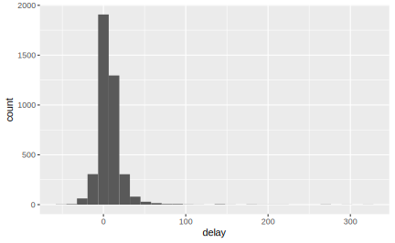
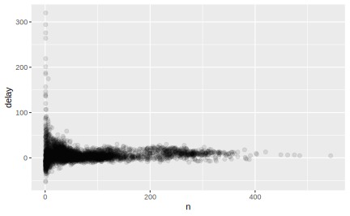
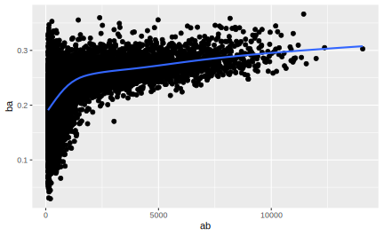
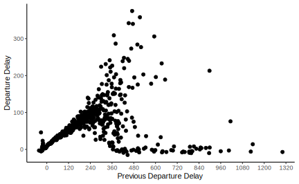
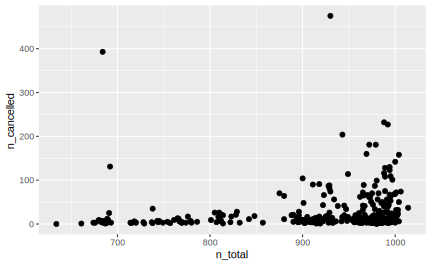
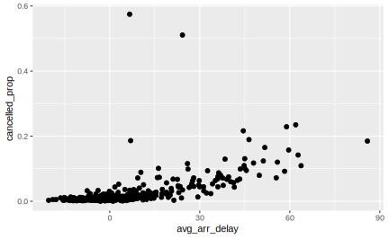

1 dplyr
dplyr 承担了 tidyverse 中最基本也最重要的数据处理、转换、分析功能(to my mind)。它的设计思想是发展处一套简洁、统一的数据操作语法(a grammar of data manipulation)，用英语中常见的动词命名操作数据的函数，并充分利用管道符 %>% 和更“现代”的数据框格式 tibble 增加代码可读性。1
为了介绍 dplyr 中的基本数据操作。可以使用 nycflights::flights，这个数据集包含了 2013 年从纽约市处罚的所有 336776 次航班的信息。该数据来自于美国交通统计局。
library(nycflights13)
flights
#> # A tibble: 336,776 x 19
#> year month day dep_time sched_dep_time dep_delay arr_time sched_arr_time
#> <int> <int> <int> <int> <int> <dbl> <int> <int>
#> 1 2013 1 1 517 515 2 830 819
#> 2 2013 1 1 533 529 4 850 830
#> 3 2013 1 1 542 540 2 923 850
#> 4 2013 1 1 544 545 -1 1004 1022
#> 5 2013 1 1 554 600 -6 812 837
#> 6 2013 1 1 554 558 -4 740 728
#> # … with 3.368e+05 more rows, and 11 more variables: arr_delay <dbl>,
#> # carrier <chr>, flight <int>, tailnum <chr>, origin <chr>, dest <chr>,
#> # air_time <dbl>, distance <dbl>, hour <dbl>, minute <dbl>, time_hour <dttm>这里的数据输出和我们之前用过的 data.frame 形式有一些差别：只显示了前几行和适合屏幕宽度的几列。这样的差别是因为 flights 数据集被存储在 tibble 当中，它是一种更简单的数据框，但更加适合在 tidyverse 中使用。相对于普通的数据框，它在打印和取子集两个方面进行了优化，更详细的内容会在后面的章节谈到。
同时，输出结果列名下面有一行 3 个或 4 个字母的缩写。它们描述了每个变量的类型。
int表示整数型变量
dbl表示双精度浮点型变量
chr表示字符串
dttm表示日期时间（日期+时间）型变量
还有另外三种常见的变量类型，虽然没有在本数据中出现，但很快就会用到：
lgl表示逻辑型变量（即布尔变量）
fct表示因子
date表示日期型变量
另外，还有一种专门为tibble数据格式编写的函数 glimpse()，它的功能和 str() 类似，但输出更为整洁，显示的数据也更多一些:
glimpse(flights)
#> Observations: 336,776
#> Variables: 19
#> $ year <int> 2013, 2013, 2013, 2013, 2013, 2013, 2013, 2013, 2013, …
#> $ month <int> 1, 1, 1, 1, 1, 1, 1, 1, 1, 1, 1, 1, 1, 1, 1, 1, 1, 1, …
#> $ day <int> 1, 1, 1, 1, 1, 1, 1, 1, 1, 1, 1, 1, 1, 1, 1, 1, 1, 1, …
#> $ dep_time <int> 517, 533, 542, 544, 554, 554, 555, 557, 557, 558, 558,…
#> $ sched_dep_time <int> 515, 529, 540, 545, 600, 558, 600, 600, 600, 600, 600,…
#> $ dep_delay <dbl> 2, 4, 2, -1, -6, -4, -5, -3, -3, -2, -2, -2, -2, -2, -…
#> $ arr_time <int> 830, 850, 923, 1004, 812, 740, 913, 709, 838, 753, 849…
#> $ sched_arr_time <int> 819, 830, 850, 1022, 837, 728, 854, 723, 846, 745, 851…
#> $ arr_delay <dbl> 11, 20, 33, -18, -25, 12, 19, -14, -8, 8, -2, -3, 7, -…
#> $ carrier <chr> "UA", "UA", "AA", "B6", "DL", "UA", "B6", "EV", "B6", …
#> $ flight <int> 1545, 1714, 1141, 725, 461, 1696, 507, 5708, 79, 301, …
#> $ tailnum <chr> "N14228", "N24211", "N619AA", "N804JB", "N668DN", "N39…
#> $ origin <chr> "EWR", "LGA", "JFK", "JFK", "LGA", "EWR", "EWR", "LGA"…
#> $ dest <chr> "IAH", "IAH", "MIA", "BQN", "ATL", "ORD", "FLL", "IAD"…
#> $ air_time <dbl> 227, 227, 160, 183, 116, 150, 158, 53, 140, 138, 149, …
#> $ distance <dbl> 1400, 1416, 1089, 1576, 762, 719, 1065, 229, 944, 733,…
#> $ hour <dbl> 5, 5, 5, 5, 6, 5, 6, 6, 6, 6, 6, 6, 6, 6, 6, 5, 6, 6, …
#> $ minute <dbl> 15, 29, 40, 45, 0, 58, 0, 0, 0, 0, 0, 0, 0, 0, 0, 59, …
#> $ time_hour <dttm> 2013-01-01 05:00:00, 2013-01-01 05:00:00, 2013-01-01 …
str(flights)
#> Classes 'tbl_df', 'tbl' and 'data.frame': 336776 obs. of 19 variables:
#> $ year : int 2013 2013 2013 2013 2013 2013 2013 2013 2013 2013 ...
#> $ month : int 1 1 1 1 1 1 1 1 1 1 ...
#> $ day : int 1 1 1 1 1 1 1 1 1 1 ...
#> $ dep_time : int 517 533 542 544 554 554 555 557 557 558 ...
#> $ sched_dep_time: int 515 529 540 545 600 558 600 600 600 600 ...
#> $ dep_delay : num 2 4 2 -1 -6 -4 -5 -3 -3 -2 ...
#> $ arr_time : int 830 850 923 1004 812 740 913 709 838 753 ...
#> $ sched_arr_time: int 819 830 850 1022 837 728 854 723 846 745 ...
#> $ arr_delay : num 11 20 33 -18 -25 12 19 -14 -8 8 ...
#> $ carrier : chr "UA" "UA" "AA" "B6" ...
#> $ flight : int 1545 1714 1141 725 461 1696 507 5708 79 301 ...
#> $ tailnum : chr "N14228" "N24211" "N619AA" "N804JB" ...
#> $ origin : chr "EWR" "LGA" "JFK" "JFK" ...
#> $ dest : chr "IAH" "IAH" "MIA" "BQN" ...
#> $ air_time : num 227 227 160 183 116 150 158 53 140 138 ...
#> $ distance : num 1400 1416 1089 1576 762 ...
#> $ hour : num 5 5 5 5 6 5 6 6 6 6 ...
#> $ minute : num 15 29 40 45 0 58 0 0 0 0 ...
#> $ time_hour : POSIXct, format: "2013-01-01 05:00:00" "2013-01-01 05:00:00" ...1.1 5个数据转换核心函数
五个 dplyr 核心函数能解决数据转换中的绝大多数问题：
- 使用
filter()筛选行
- 使用
arrange()排列行
- 使用
select选取列
- 用现有的变量创建新变量
mutate()
- 聚合并计算摘要统计量
summarize()
上面的所有函数都可以和 group_by() 函数联合起来使用，group_by() 函数可以改变以上每个函数的作用范围，让其从在整个数据集上操作变为在每个变量的水平上分别操作。这 6 个函数构成了数据处理的基本工具。
这些函数有完全相同的参数结构和工作方式：
- 第一个参数是数据集，表明我们想对什么数据进行处理
- 随后的参数是变量名称（不带引号）描述了在数据上进行什么处理，不同的变量之间用逗号分隔
- 它们不会改变原数据，而是生成一个新的数据框
1.2 filter()筛选行
filter()函数可以基于观测值筛选行，符合条件的行留下，不符合条件的被剔除，最终得到一个观测子集。第一个参数是数据集的名称，第二个参数以及随后的参数是用来筛选行的条件。例如，我们可以使用以下代码筛选出一月一日的所有航班（条件：月 = 1 且 日=1）
flights %>% filter(month == 1, day == 1)
#> # A tibble: 842 x 19
#> year month day dep_time sched_dep_time dep_delay arr_time sched_arr_time
#> <int> <int> <int> <int> <int> <dbl> <int> <int>
#> 1 2013 1 1 517 515 2 830 819
#> 2 2013 1 1 533 529 4 850 830
#> 3 2013 1 1 542 540 2 923 850
#> 4 2013 1 1 544 545 -1 1004 1022
#> 5 2013 1 1 554 600 -6 812 837
#> 6 2013 1 1 554 558 -4 740 728
#> # … with 836 more rows, and 11 more variables: arr_delay <dbl>, carrier <chr>,
#> # flight <int>, tailnum <chr>, origin <chr>, dest <chr>, air_time <dbl>,
#> # distance <dbl>, hour <dbl>, minute <dbl>, time_hour <dttm>filter()函数的内部执行原理：
以行为单位，如果该行满足所指定的条件，则被筛选出 ； 若不满足，则被剔除。使用filter()时，总应该从每一行的角度来思考问题。
因为dplyr中的函数从不改变原数据，如果想储存filter()得出的结果，那么需要把它赋值给一个变量。
R 要么输出结果，要么将结果保存在变量中。如果想要在存储的同时显示结果，可以用括号将赋值语句括起来：
(jan = flights %>% filter(month == 1, day == 1))
#> # A tibble: 842 x 19
#> year month day dep_time sched_dep_time dep_delay arr_time sched_arr_time
#> <int> <int> <int> <int> <int> <dbl> <int> <int>
#> 1 2013 1 1 517 515 2 830 819
#> 2 2013 1 1 533 529 4 850 830
#> 3 2013 1 1 542 540 2 923 850
#> 4 2013 1 1 544 545 -1 1004 1022
#> 5 2013 1 1 554 600 -6 812 837
#> 6 2013 1 1 554 558 -4 740 728
#> # … with 836 more rows, and 11 more variables: arr_delay <dbl>, carrier <chr>,
#> # flight <int>, tailnum <chr>, origin <chr>, dest <chr>, air_time <dbl>,
#> # distance <dbl>, hour <dbl>, minute <dbl>, time_hour <dttm>1.2.1 运算符
为了有效地进行筛选，R 提供了一套标准的运算符，包括比较运算符和逻辑运算符。
比较运算符： ==、！= 、 > 、 >= 、 < 、 <=
当开始编写条件时，最容易犯的错误就是用=而不是==来测试是否相等。R 对于这种错误会提供一条启发性的错误信息：
在判断是否相等时，还有另一个常见问题：浮点数。例如，下面的结果可能出人意料：
计算机使用的是有限位运算，不能存储无限位的数。因此我们看到的每个数都是一个近似值。比较浮点数是否相等时，不能用==,而应该用near(),它用于比较两个数值向量是否相等，且带有一定容忍度(tolerence):
**逻辑运算符*
filter()中的多个参数是“与”的关系，如data %>% filter(condition_1,condition_2,···,condition_n)表示的是“我希望同时筛选出满足这n个条件的行。如果要实现其他类型的组合，需要使用逻辑（布尔）运算符。&表示与，|表示或，!表示非。下图给出了布尔运算的完整集合：

例如，想要找出11月或12月出发的所有航班：
flights %>% filter(month == 11 | month == 12)
#> # A tibble: 55,403 x 19
#> year month day dep_time sched_dep_time dep_delay arr_time sched_arr_time
#> <int> <int> <int> <int> <int> <dbl> <int> <int>
#> 1 2013 11 1 5 2359 6 352 345
#> 2 2013 11 1 35 2250 105 123 2356
#> 3 2013 11 1 455 500 -5 641 651
#> 4 2013 11 1 539 545 -6 856 827
#> 5 2013 11 1 542 545 -3 831 855
#> 6 2013 11 1 549 600 -11 912 923
#> # … with 5.54e+04 more rows, and 11 more variables: arr_delay <dbl>,
#> # carrier <chr>, flight <int>, tailnum <chr>, origin <chr>, dest <chr>,
#> # air_time <dbl>, distance <dbl>, hour <dbl>, minute <dbl>, time_hour <dttm>表达式中的运算顺序和正常语言中的是不一样的。你不能写成flights %>% filter(month == 11 | 12)，这种形式的文字翻译确实是“找出11月或12月的所有航班”，但在代码中不是这个意思。代码中的含义是找出所有月份为11|12的航班，这个表达式的逻辑值为TRUE，在数字语境中R会将它解读为1，所以这段代码实际上找出的 1 月出发的所有航班。
这种问题有一个有用的简写形式：x %in% y，这个表达式在x被包含于y的时候返回TRUE，我们可以这样改写上面的代码：
flights %>% filter(month %in% c(11, 12)) ## 找出所有月份值包含在该向量里的行
#> # A tibble: 55,403 x 19
#> year month day dep_time sched_dep_time dep_delay arr_time sched_arr_time
#> <int> <int> <int> <int> <int> <dbl> <int> <int>
#> 1 2013 11 1 5 2359 6 352 345
#> 2 2013 11 1 35 2250 105 123 2356
#> 3 2013 11 1 455 500 -5 641 651
#> 4 2013 11 1 539 545 -6 856 827
#> 5 2013 11 1 542 545 -3 831 855
#> 6 2013 11 1 549 600 -11 912 923
#> # … with 5.54e+04 more rows, and 11 more variables: arr_delay <dbl>,
#> # carrier <chr>, flight <int>, tailnum <chr>, origin <chr>, dest <chr>,
#> # air_time <dbl>, distance <dbl>, hour <dbl>, minute <dbl>, time_hour <dttm>有时可以使用德摩根律来将筛选条件简化：!(x & y)等价于!x | !y，而!(x | y)等价于!x & !y。例如，如果想要找出延误时间（到达和出发)都不多于两个小时的航班，以下两种方式均可：
flights %>% filter(arr_delay <= 120 & dep_dealy <= 120 )
flights %>% filter(!(arr_delay > 120| dep_delay > 120 ))
dplyr中另外一个对筛选有帮助的函数是between(x,left,right)，它用于判断x是否落在left和right两个值确定的闭区间里。
例如找出所有在11月和12月出发的航班也可以这样表达：
flights %>% filter(between(month, 11, 12))
#> # A tibble: 55,403 x 19
#> year month day dep_time sched_dep_time dep_delay arr_time sched_arr_time
#> <int> <int> <int> <int> <int> <dbl> <int> <int>
#> 1 2013 11 1 5 2359 6 352 345
#> 2 2013 11 1 35 2250 105 123 2356
#> 3 2013 11 1 455 500 -5 641 651
#> 4 2013 11 1 539 545 -6 856 827
#> 5 2013 11 1 542 545 -3 831 855
#> 6 2013 11 1 549 600 -11 912 923
#> # … with 5.54e+04 more rows, and 11 more variables: arr_delay <dbl>,
#> # carrier <chr>, flight <int>, tailnum <chr>, origin <chr>, dest <chr>,
#> # air_time <dbl>, distance <dbl>, hour <dbl>, minute <dbl>, time_hour <dttm>有些时候，filter()函数中用来筛选的条件可能比较复杂，需要书写令人费解的逻辑表达式，这时候可以考虑创建一个新变量代表逻辑判断的结果。这样检查代码会容易很多。我们很快就会介绍如何创建新变量。
1.2.2 缺失值
NA(not available)表示未知的值、缺失值，缺失值一个很重要的特点是它是“可传染的”。如果运算中包含了缺失值，那么运算结果一般来说也会是缺失值。
以上的表达式的结果都是NA，这很好理解，如果R不知道表达式其中的一个量究竟是什么值，自然表达式的结果也就不可知。
还要注意一件事：
我们可以这么理解这个结果：
令x为Mary的年龄，我们不知道她有多大：x <- NA
令y为John的年龄，我们同样不知道他又多大：x <- NA
Mary和John的年龄相同吗？： x == y
不知道！
鉴于此，使用NA == x来判断x是否是缺失值不可行。我们用函数is.na()进行判断：
前面说过，filter() 实际上是在提问：某行的某个 \ 某些变量满足给定的条件吗？如果为 TRUE，则筛选出该行。如果该行在涉及变量上的取值是 NA，那么逻辑表达式也会返回 NA，这些行将被返回结果为 FALSE 的行一并被排除。如果想保留缺失值，同样可以利用逻辑表达式指出：
1.2.3 练习
到达时间延误两小时或更多的航班
flights %>% filter(arr_delay >= 120)
#> # A tibble: 10,200 x 19
#> year month day dep_time sched_dep_time dep_delay arr_time sched_arr_time
#> <int> <int> <int> <int> <int> <dbl> <int> <int>
#> 1 2013 1 1 811 630 101 1047 830
#> 2 2013 1 1 848 1835 853 1001 1950
#> 3 2013 1 1 957 733 144 1056 853
#> 4 2013 1 1 1114 900 134 1447 1222
#> 5 2013 1 1 1505 1310 115 1638 1431
#> 6 2013 1 1 1525 1340 105 1831 1626
#> # … with 1.019e+04 more rows, and 11 more variables: arr_delay <dbl>,
#> # carrier <chr>, flight <int>, tailnum <chr>, origin <chr>, dest <chr>,
#> # air_time <dbl>, distance <dbl>, hour <dbl>, minute <dbl>, time_hour <dttm>飞往休斯顿（IAH机场或者HOU机场）的航班
flights %>% filter(dest == "IAH" | dest == "HOU")
#> # A tibble: 9,313 x 19
#> year month day dep_time sched_dep_time dep_delay arr_time sched_arr_time
#> <int> <int> <int> <int> <int> <dbl> <int> <int>
#> 1 2013 1 1 517 515 2 830 819
#> 2 2013 1 1 533 529 4 850 830
#> 3 2013 1 1 623 627 -4 933 932
#> 4 2013 1 1 728 732 -4 1041 1038
#> 5 2013 1 1 739 739 0 1104 1038
#> 6 2013 1 1 908 908 0 1228 1219
#> # … with 9,307 more rows, and 11 more variables: arr_delay <dbl>,
#> # carrier <chr>, flight <int>, tailnum <chr>, origin <chr>, dest <chr>,
#> # air_time <dbl>, distance <dbl>, hour <dbl>, minute <dbl>, time_hour <dttm>也可以写成filter(flights, dest %in% c("HOU","IAH"))
由联合航空（United）、美利坚航空（American）或者三角洲航空（Delat）运营的航班
carrier列代表了航空公司，但是用两个字母缩写表示：
flights["carrier"]
#> # A tibble: 336,776 x 1
#> carrier
#> <chr>
#> 1 UA
#> 2 UA
#> 3 AA
#> 4 B6
#> 5 DL
#> 6 UA
#> # … with 3.368e+05 more rows我们可以在airlines数据集中找到这些缩写的含义：
airlines
#> # A tibble: 16 x 2
#> carrier name
#> <chr> <chr>
#> 1 9E Endeavor Air Inc.
#> 2 AA American Airlines Inc.
#> 3 AS Alaska Airlines Inc.
#> 4 B6 JetBlue Airways
#> 5 DL Delta Air Lines Inc.
#> 6 EV ExpressJet Airlines Inc.
#> # … with 10 more rows三角洲航空对应 “DL”，“UA” 代表联合航空，“AA”代表美利坚航空
flights %>% filter(carrier %in% c("DL", "UA", "AA"))
#> # A tibble: 139,504 x 19
#> year month day dep_time sched_dep_time dep_delay arr_time sched_arr_time
#> <int> <int> <int> <int> <int> <dbl> <int> <int>
#> 1 2013 1 1 517 515 2 830 819
#> 2 2013 1 1 533 529 4 850 830
#> 3 2013 1 1 542 540 2 923 850
#> 4 2013 1 1 554 600 -6 812 837
#> 5 2013 1 1 554 558 -4 740 728
#> 6 2013 1 1 558 600 -2 753 745
#> # … with 1.395e+05 more rows, and 11 more variables: arr_delay <dbl>,
#> # carrier <chr>, flight <int>, tailnum <chr>, origin <chr>, dest <chr>,
#> # air_time <dbl>, distance <dbl>, hour <dbl>, minute <dbl>, time_hour <dttm>夏季(7月、8月、9月)出发的航班
flights %>% filter(month %in% c(7, 8, 9))
#> # A tibble: 86,326 x 19
#> year month day dep_time sched_dep_time dep_delay arr_time sched_arr_time
#> <int> <int> <int> <int> <int> <dbl> <int> <int>
#> 1 2013 7 1 1 2029 212 236 2359
#> 2 2013 7 1 2 2359 3 344 344
#> 3 2013 7 1 29 2245 104 151 1
#> 4 2013 7 1 43 2130 193 322 14
#> 5 2013 7 1 44 2150 174 300 100
#> 6 2013 7 1 46 2051 235 304 2358
#> # … with 8.632e+04 more rows, and 11 more variables: arr_delay <dbl>,
#> # carrier <chr>, flight <int>, tailnum <chr>, origin <chr>, dest <chr>,
#> # air_time <dbl>, distance <dbl>, hour <dbl>, minute <dbl>, time_hour <dttm>另一种写法：filter(flgihts,month >= 7, month <= 9)
用between()函数的写法：
flights %>% filter(between(month,7,9))
#> # A tibble: 86,326 x 19
#> year month day dep_time sched_dep_time dep_delay arr_time sched_arr_time
#> <int> <int> <int> <int> <int> <dbl> <int> <int>
#> 1 2013 7 1 1 2029 212 236 2359
#> 2 2013 7 1 2 2359 3 344 344
#> 3 2013 7 1 29 2245 104 151 1
#> 4 2013 7 1 43 2130 193 322 14
#> 5 2013 7 1 44 2150 174 300 100
#> 6 2013 7 1 46 2051 235 304 2358
#> # … with 8.632e+04 more rows, and 11 more variables: arr_delay <dbl>,
#> # carrier <chr>, flight <int>, tailnum <chr>, origin <chr>, dest <chr>,
#> # air_time <dbl>, distance <dbl>, hour <dbl>, minute <dbl>, time_hour <dttm>到达时间延误超过两小时，但出发时间没有延误的航班
flights %>% filter(dep_delay > 120 ,
arr_delay <= 120)
#> # A tibble: 1,262 x 19
#> year month day dep_time sched_dep_time dep_delay arr_time sched_arr_time
#> <int> <int> <int> <int> <int> <dbl> <int> <int>
#> 1 2013 1 1 1540 1338 122 2020 1825
#> 2 2013 1 2 2334 2129 125 33 2242
#> 3 2013 1 3 1321 1115 126 1450 1257
#> 4 2013 1 3 1758 1550 128 2240 2050
#> 5 2013 1 3 1933 1730 123 2131 1953
#> 6 2013 1 4 1602 1359 123 1715 1517
#> # … with 1,256 more rows, and 11 more variables: arr_delay <dbl>,
#> # carrier <chr>, flight <int>, tailnum <chr>, origin <chr>, dest <chr>,
#> # air_time <dbl>, distance <dbl>, hour <dbl>, minute <dbl>, time_hour <dttm>延误至少一小时，但飞行过程弥补回30分钟的航班
flights %>% filter(dep_delay - arr_delay > 30)
#> # A tibble: 17,950 x 19
#> year month day dep_time sched_dep_time dep_delay arr_time sched_arr_time
#> <int> <int> <int> <int> <int> <dbl> <int> <int>
#> 1 2013 1 1 701 700 1 1123 1154
#> 2 2013 1 1 820 820 0 1249 1329
#> 3 2013 1 1 840 845 -5 1311 1350
#> 4 2013 1 1 857 851 6 1157 1222
#> 5 2013 1 1 909 810 59 1331 1315
#> 6 2013 1 1 1025 951 34 1258 1302
#> # … with 1.794e+04 more rows, and 11 more variables: arr_delay <dbl>,
#> # carrier <chr>, flight <int>, tailnum <chr>, origin <chr>, dest <chr>,
#> # air_time <dbl>, distance <dbl>, hour <dbl>, minute <dbl>, time_hour <dttm>出发时间在午夜和早上6点之间（包括0点和6点）的航班
在变量dep_time中，0 点用数值 2400 代表：
summary(flights$dep_time)
#> Min. 1st Qu. Median Mean 3rd Qu. Max. NA's
#> 1 907 1401 1349 1744 2400 8255出于这点，不能简单写成dep_time <= 600，而是如下：
flights %>% filter(dep_time <= 600 | dep_time == 2400)
#> # A tibble: 9,373 x 19
#> year month day dep_time sched_dep_time dep_delay arr_time sched_arr_time
#> <int> <int> <int> <int> <int> <dbl> <int> <int>
#> 1 2013 1 1 517 515 2 830 819
#> 2 2013 1 1 533 529 4 850 830
#> 3 2013 1 1 542 540 2 923 850
#> 4 2013 1 1 544 545 -1 1004 1022
#> 5 2013 1 1 554 600 -6 812 837
#> 6 2013 1 1 554 558 -4 740 728
#> # … with 9,367 more rows, and 11 more variables: arr_delay <dbl>,
#> # carrier <chr>, flight <int>, tailnum <chr>, origin <chr>, dest <chr>,
#> # air_time <dbl>, distance <dbl>, hour <dbl>, minute <dbl>, time_hour <dttm>sum(is.na(flights$dep_time))
#> [1] 8255
flights %>% filter(is.na(dep_time))
#> # A tibble: 8,255 x 19
#> year month day dep_time sched_dep_time dep_delay arr_time sched_arr_time
#> <int> <int> <int> <int> <int> <dbl> <int> <int>
#> 1 2013 1 1 NA 1630 NA NA 1815
#> 2 2013 1 1 NA 1935 NA NA 2240
#> 3 2013 1 1 NA 1500 NA NA 1825
#> 4 2013 1 1 NA 600 NA NA 901
#> 5 2013 1 2 NA 1540 NA NA 1747
#> 6 2013 1 2 NA 1620 NA NA 1746
#> # … with 8,249 more rows, and 11 more variables: arr_delay <dbl>,
#> # carrier <chr>, flight <int>, tailnum <chr>, origin <chr>, dest <chr>,
#> # air_time <dbl>, distance <dbl>, hour <dbl>, minute <dbl>, time_hour <dttm>注意到，所有dep_time为 NA 的航班在有关实际到达、出发情况的变量上取值皆为 NA，这些很可能是被取消的航班。
# 其他变量中的缺失值
flights %>%
summarize_all( ~ sum(is.na(.)))
#> # A tibble: 1 x 19
#> year month day dep_time sched_dep_time dep_delay arr_time sched_arr_time
#> <int> <int> <int> <int> <int> <int> <int> <int>
#> 1 0 0 0 8255 0 8255 8713 0
#> # … with 11 more variables: arr_delay <int>, carrier <int>, flight <int>,
#> # tailnum <int>, origin <int>, dest <int>, air_time <int>, distance <int>,
#> # hour <int>, minute <int>, time_hour <int>
- 为什么
NA ^ 0的值不是NA，而NA * 0的值是NA ？为什么NA | TRUE 的值不是NA？为什么FALSE & NA的值不是NA，能找出一般规律吗？
只要表达式的值被NA背后的未知量所决定，就返回NA
对于所有x的取值，都有\(x ^ 0 = 1\)，NA ^ 0不取决于 NA 到底可能是什么值。
但对于\(x * 0\)，如果x趋近于正负无穷（ R 用-inf 和 inf代表），则R会返回 NaN 错误（not a number），只要知道 NA 究竟是什么，才能知道该表达式的结果
同样，对于 NA | TRUE，不论 NA 是什么，该表达式总为真 ； 对于NA & FALSE，不论 NA 是什么，该表达式总为假。
而 NA & TRUE和NA | FALSE则会返回 NA：
1.3 arrange() 排列行
arrange()函数的工作方式与filter()函数非常相似，但它不是筛选行，而是改变行的顺序。它接受一个数据集和一组作为排序依据的列名（或者更复杂的表达式）作为参数，如果列名不止一个，那么就是用后面的列在前面排序的基础上继续排序：
flights %>% arrange(year, month, day) ## 依次按照year/month/day三个变量按升序排序
#> # A tibble: 336,776 x 19
#> year month day dep_time sched_dep_time dep_delay arr_time sched_arr_time
#> <int> <int> <int> <int> <int> <dbl> <int> <int>
#> 1 2013 1 1 517 515 2 830 819
#> 2 2013 1 1 533 529 4 850 830
#> 3 2013 1 1 542 540 2 923 850
#> 4 2013 1 1 544 545 -1 1004 1022
#> 5 2013 1 1 554 600 -6 812 837
#> 6 2013 1 1 554 558 -4 740 728
#> # … with 3.368e+05 more rows, and 11 more variables: arr_delay <dbl>,
#> # carrier <chr>, flight <int>, tailnum <chr>, origin <chr>, dest <chr>,
#> # air_time <dbl>, distance <dbl>, hour <dbl>, minute <dbl>, time_hour <dttm>如果想要按某列降序排列行，可以对该列名使用函数desc()：
flights %>% arrange(desc(arr_delay)) ## 按照到达延误时间从大到小排序
#> # A tibble: 336,776 x 19
#> year month day dep_time sched_dep_time dep_delay arr_time sched_arr_time
#> <int> <int> <int> <int> <int> <dbl> <int> <int>
#> 1 2013 1 9 641 900 1301 1242 1530
#> 2 2013 6 15 1432 1935 1137 1607 2120
#> 3 2013 1 10 1121 1635 1126 1239 1810
#> 4 2013 9 20 1139 1845 1014 1457 2210
#> 5 2013 7 22 845 1600 1005 1044 1815
#> 6 2013 4 10 1100 1900 960 1342 2211
#> # … with 3.368e+05 more rows, and 11 more variables: arr_delay <dbl>,
#> # carrier <chr>, flight <int>, tailnum <chr>, origin <chr>, dest <chr>,
#> # air_time <dbl>, distance <dbl>, hour <dbl>, minute <dbl>, time_hour <dttm>缺失值总是排在最后：
df <- tibble(x = c(5, 2, NA))
df %>% arrange(x)
#> # A tibble: 3 x 1
#> x
#> <dbl>
#> 1 2
#> 2 5
#> 3 NA如果参数是一个关于某些列的表达式expression(variable_n)，它的意思是告诉arrange()：“按照各行在这个表达式上的取值的从小到大的顺序，排列原来的数据集。
flights %>% arrange((dep_delay ** 2)) ## dep_delay的绝对值小的行被排在前面
#> # A tibble: 336,776 x 19
#> year month day dep_time sched_dep_time dep_delay arr_time sched_arr_time
#> <int> <int> <int> <int> <int> <dbl> <int> <int>
#> 1 2013 1 1 559 559 0 702 706
#> 2 2013 1 1 600 600 0 851 858
#> 3 2013 1 1 600 600 0 837 825
#> 4 2013 1 1 607 607 0 858 915
#> 5 2013 1 1 615 615 0 1039 1100
#> 6 2013 1 1 615 615 0 833 842
#> # … with 3.368e+05 more rows, and 11 more variables: arr_delay <dbl>,
#> # carrier <chr>, flight <int>, tailnum <chr>, origin <chr>, dest <chr>,
#> # air_time <dbl>, distance <dbl>, hour <dbl>, minute <dbl>, time_hour <dttm>例如，我们希望找到总延误时间(dep_delay + arr_delay)最长的航班
## 延误时间最长的航班
flights %>% arrange(desc(arr_delay + dep_delay))
#> # A tibble: 336,776 x 19
#> year month day dep_time sched_dep_time dep_delay arr_time sched_arr_time
#> <int> <int> <int> <int> <int> <dbl> <int> <int>
#> 1 2013 1 9 641 900 1301 1242 1530
#> 2 2013 6 15 1432 1935 1137 1607 2120
#> 3 2013 1 10 1121 1635 1126 1239 1810
#> 4 2013 9 20 1139 1845 1014 1457 2210
#> 5 2013 7 22 845 1600 1005 1044 1815
#> 6 2013 4 10 1100 1900 960 1342 2211
#> # … with 3.368e+05 more rows, and 11 more variables: arr_delay <dbl>,
#> # carrier <chr>, flight <int>, tailnum <chr>, origin <chr>, dest <chr>,
#> # air_time <dbl>, distance <dbl>, hour <dbl>, minute <dbl>, time_hour <dttm>如果A行在两个量上的取值是(2,5)，B行是(1,10)，B会出现在A后面，因为arrange()按照这个表达式来进行排列。
1.3.1 slice()
slice()函数按照索引选择指定的观测行，与传统的 “[” 选择方法相比，它与 dplyr 函数的配合更好，支持管道操作：
## 选择前5行
mtcars %>% slice(1:5)
#> mpg cyl disp hp drat wt qsec vs am gear carb
#> 1 21.0 6 160 110 3.90 2.62 16.5 0 1 4 4
#> 2 21.0 6 160 110 3.90 2.88 17.0 0 1 4 4
#> 3 22.8 4 108 93 3.85 2.32 18.6 1 1 4 1
#> 4 21.4 6 258 110 3.08 3.21 19.4 1 0 3 1
#> 5 18.7 8 360 175 3.15 3.44 17.0 0 0 3 2
## 选择最后一行,类似于tail(mtcars,1)
mtcars %>% slice(1L)
#> mpg cyl disp hp drat wt qsec vs am gear carb
#> 1 21 6 160 110 3.9 2.62 16.5 0 1 4 4
# Rows can be dropped with negative indices:
slice(mtcars, -5:-n())
#> mpg cyl disp hp drat wt qsec vs am gear carb
#> 1 21.0 6 160 110 3.90 2.62 16.5 0 1 4 4
#> 2 21.0 6 160 110 3.90 2.88 17.0 0 1 4 4
#> 3 22.8 4 108 93 3.85 2.32 18.6 1 1 4 1
#> 4 21.4 6 258 110 3.08 3.21 19.4 1 0 3 1
# In this case, the result will be equivalent to:
slice(mtcars, 1:4)
#> mpg cyl disp hp drat wt qsec vs am gear carb
#> 1 21.0 6 160 110 3.90 2.62 16.5 0 1 4 4
#> 2 21.0 6 160 110 3.90 2.88 17.0 0 1 4 4
#> 3 22.8 4 108 93 3.85 2.32 18.6 1 1 4 1
#> 4 21.4 6 258 110 3.08 3.21 19.4 1 0 3 1
# Equivalent code using filter that will also work with databases,
# but won't be as fast for in-memory data. For many databases, you'll
# need to supply an explicit variable to use to compute the row number.
filter(mtcars, row_number() == 1L)
#> mpg cyl disp hp drat wt qsec vs am gear carb
#> 1 21 6 160 110 3.9 2.62 16.5 0 1 4 4
filter(mtcars, row_number() == n())
#> mpg cyl disp hp drat wt qsec vs am gear carb
#> 1 21.4 4 121 109 4.11 2.78 18.6 1 1 4 2
filter(mtcars, between(row_number(), 5, n()))
#> mpg cyl disp hp drat wt qsec vs am gear carb
#> 1 18.7 8 360.0 175 3.15 3.44 17.0 0 0 3 2
#> 2 18.1 6 225.0 105 2.76 3.46 20.2 1 0 3 1
#> 3 14.3 8 360.0 245 3.21 3.57 15.8 0 0 3 4
#> 4 24.4 4 146.7 62 3.69 3.19 20.0 1 0 4 2
#> 5 22.8 4 140.8 95 3.92 3.15 22.9 1 0 4 2
#> 6 19.2 6 167.6 123 3.92 3.44 18.3 1 0 4 4
#> 7 17.8 6 167.6 123 3.92 3.44 18.9 1 0 4 4
#> 8 16.4 8 275.8 180 3.07 4.07 17.4 0 0 3 3
#> 9 17.3 8 275.8 180 3.07 3.73 17.6 0 0 3 3
#> 10 15.2 8 275.8 180 3.07 3.78 18.0 0 0 3 3
#> 11 10.4 8 472.0 205 2.93 5.25 18.0 0 0 3 4
#> 12 10.4 8 460.0 215 3.00 5.42 17.8 0 0 3 4
#> 13 14.7 8 440.0 230 3.23 5.34 17.4 0 0 3 4
#> 14 32.4 4 78.7 66 4.08 2.20 19.5 1 1 4 1
#> 15 30.4 4 75.7 52 4.93 1.61 18.5 1 1 4 2
#> 16 33.9 4 71.1 65 4.22 1.83 19.9 1 1 4 1
#> 17 21.5 4 120.1 97 3.70 2.46 20.0 1 0 3 1
#> 18 15.5 8 318.0 150 2.76 3.52 16.9 0 0 3 2
#> 19 15.2 8 304.0 150 3.15 3.44 17.3 0 0 3 2
#> 20 13.3 8 350.0 245 3.73 3.84 15.4 0 0 3 4
#> 21 19.2 8 400.0 175 3.08 3.85 17.1 0 0 3 2
#> 22 27.3 4 79.0 66 4.08 1.94 18.9 1 1 4 1
#> 23 26.0 4 120.3 91 4.43 2.14 16.7 0 1 5 2
#> 24 30.4 4 95.1 113 3.77 1.51 16.9 1 1 5 2
#> 25 15.8 8 351.0 264 4.22 3.17 14.5 0 1 5 4
#> 26 19.7 6 145.0 175 3.62 2.77 15.5 0 1 5 6
#> 27 15.0 8 301.0 335 3.54 3.57 14.6 0 1 5 8
#> 28 21.4 4 121.0 109 4.11 2.78 18.6 1 1 4 2当要求依据某种排序选出前/后n个观测时，arrange()配合slice()会很方便。例如，下面的代码都选出出发时间最早的10架航班，但是第一种方法更简单一些：
## arrange + slice
flights %>% arrange(dep_time) %>% slice(1:10)
#> # A tibble: 10 x 19
#> year month day dep_time sched_dep_time dep_delay arr_time sched_arr_time
#> <int> <int> <int> <int> <int> <dbl> <int> <int>
#> 1 2013 1 13 1 2249 72 108 2357
#> 2 2013 1 31 1 2100 181 124 2225
#> 3 2013 11 13 1 2359 2 442 440
#> 4 2013 12 16 1 2359 2 447 437
#> 5 2013 12 20 1 2359 2 430 440
#> 6 2013 12 26 1 2359 2 437 440
#> # … with 4 more rows, and 11 more variables: arr_delay <dbl>, carrier <chr>,
#> # flight <int>, tailnum <chr>, origin <chr>, dest <chr>, air_time <dbl>,
#> # distance <dbl>, hour <dbl>, minute <dbl>, time_hour <dttm>
## filter
flights %>% filter(min_rank(dep_time)<=10)
#> # A tibble: 25 x 19
#> year month day dep_time sched_dep_time dep_delay arr_time sched_arr_time
#> <int> <int> <int> <int> <int> <dbl> <int> <int>
#> 1 2013 1 13 1 2249 72 108 2357
#> 2 2013 1 31 1 2100 181 124 2225
#> 3 2013 11 13 1 2359 2 442 440
#> 4 2013 12 16 1 2359 2 447 437
#> 5 2013 12 20 1 2359 2 430 440
#> 6 2013 12 26 1 2359 2 437 440
#> # … with 19 more rows, and 11 more variables: arr_delay <dbl>, carrier <chr>,
#> # flight <int>, tailnum <chr>, origin <chr>, dest <chr>, air_time <dbl>,
#> # distance <dbl>, hour <dbl>, minute <dbl>, time_hour <dttm>1.3.2 练习
arrange()将缺失值排在最前面？（提示：使用is.na())例：把 flights 数据集中
dep_time上的 NA 值排在最前面( to sort the data frame by departure time (dep_time) in ascending order but NA values first)
首先is.na(dep_time)将把所有NA变为TRUE（1），其他数值变成FALSE（0），所以desc(is.na(dep_time))是一个排序依据,它告诉arrange()，把那些经过运算is.na(dep_time)后值大的行排在前面，即原先的NA值 ； 之后，我们还要处理那些不是NA的值的排列，所以添加一个参数dep_time：
flights %>% arrange(desc(is.na(dep_time)), dep_time)
#> # A tibble: 336,776 x 19
#> year month day dep_time sched_dep_time dep_delay arr_time sched_arr_time
#> <int> <int> <int> <int> <int> <dbl> <int> <int>
#> 1 2013 1 1 NA 1630 NA NA 1815
#> 2 2013 1 1 NA 1935 NA NA 2240
#> 3 2013 1 1 NA 1500 NA NA 1825
#> 4 2013 1 1 NA 600 NA NA 901
#> 5 2013 1 2 NA 1540 NA NA 1747
#> 6 2013 1 2 NA 1620 NA NA 1746
#> # … with 3.368e+05 more rows, and 11 more variables: arr_delay <dbl>,
#> # carrier <chr>, flight <int>, tailnum <chr>, origin <chr>, dest <chr>,
#> # air_time <dbl>, distance <dbl>, hour <dbl>, minute <dbl>, time_hour <dttm>Exercise 1.4 对flights排序以找出延误时间最长的航班。找出出发时间最早的航班。
## 延误时间最长的航班
flights %>% arrange(desc(dep_delay))
#> # A tibble: 336,776 x 19
#> year month day dep_time sched_dep_time dep_delay arr_time sched_arr_time
#> <int> <int> <int> <int> <int> <dbl> <int> <int>
#> 1 2013 1 9 641 900 1301 1242 1530
#> 2 2013 6 15 1432 1935 1137 1607 2120
#> 3 2013 1 10 1121 1635 1126 1239 1810
#> 4 2013 9 20 1139 1845 1014 1457 2210
#> 5 2013 7 22 845 1600 1005 1044 1815
#> 6 2013 4 10 1100 1900 960 1342 2211
#> # … with 3.368e+05 more rows, and 11 more variables: arr_delay <dbl>,
#> # carrier <chr>, flight <int>, tailnum <chr>, origin <chr>, dest <chr>,
#> # air_time <dbl>, distance <dbl>, hour <dbl>, minute <dbl>, time_hour <dttm>## 出发时间最早的航班
flights %>% arrange(dep_time)
#> # A tibble: 336,776 x 19
#> year month day dep_time sched_dep_time dep_delay arr_time sched_arr_time
#> <int> <int> <int> <int> <int> <dbl> <int> <int>
#> 1 2013 1 13 1 2249 72 108 2357
#> 2 2013 1 31 1 2100 181 124 2225
#> 3 2013 11 13 1 2359 2 442 440
#> 4 2013 12 16 1 2359 2 447 437
#> 5 2013 12 20 1 2359 2 430 440
#> 6 2013 12 26 1 2359 2 437 440
#> # … with 3.368e+05 more rows, and 11 more variables: arr_delay <dbl>,
#> # carrier <chr>, flight <int>, tailnum <chr>, origin <chr>, dest <chr>,
#> # air_time <dbl>, distance <dbl>, hour <dbl>, minute <dbl>, time_hour <dttm>Exercise 1.5 对flights排序以找出速度最快的航班
这个排序条件需要用到表达式，速度 = distance / air_time
flights %>% arrange(distance / air_time)
#> # A tibble: 336,776 x 19
#> year month day dep_time sched_dep_time dep_delay arr_time sched_arr_time
#> <int> <int> <int> <int> <int> <dbl> <int> <int>
#> 1 2013 1 28 1917 1825 52 2118 1935
#> 2 2013 6 29 755 800 -5 1035 909
#> 3 2013 8 28 932 940 -8 1116 1051
#> 4 2013 1 30 1037 955 42 1221 1100
#> 5 2013 11 27 556 600 -4 727 658
#> 6 2013 5 21 558 600 -2 721 657
#> # … with 3.368e+05 more rows, and 11 more variables: arr_delay <dbl>,
#> # carrier <chr>, flight <int>, tailnum <chr>, origin <chr>, dest <chr>,
#> # air_time <dbl>, distance <dbl>, hour <dbl>, minute <dbl>, time_hour <dttm>1.4 使用select()选择列
如今，数据集有几百个甚至几千个变量已经司空见惯。这种情况下，如何找出真正感兴趣的变量经常是一个挑战。通过基于变量名的操作，select()函数可以让我们快速生成一个有用的变量子集。
虽然航班数据只有 19 个变量，但还是可以用来了解一下select()函数的大致用法：
## 只选择year,month,day 三个变量
flights %>% select(year, month, day)
#> # A tibble: 336,776 x 3
#> year month day
#> <int> <int> <int>
#> 1 2013 1 1
#> 2 2013 1 1
#> 3 2013 1 1
#> 4 2013 1 1
#> 5 2013 1 1
#> 6 2013 1 1
#> # … with 3.368e+05 more rows顺便说一句，如果把变量名变成字符串或者它在所有变量中的顺序也可以正常工作,如flights %>% select("year", "month", "day")和flights %>% select(1, 2, 3)和上面代码会返回一样结果，但是这两种方法都不值得推荐。
当希望选择的列比较多时，可以先用一个向量储存，但用向量储存的必须是字符串形式的列名：
vars = c("arr_delay", "dep_delay")
flights %>% select(vars)
#> # A tibble: 336,776 x 2
#> arr_delay dep_delay
#> <dbl> <dbl>
#> 1 11 2
#> 2 20 4
#> 3 33 2
#> 4 -18 -1
#> 5 -25 -6
#> 6 12 -4
#> # … with 3.368e+05 more rows另一个问题是，如果vars本身就是一个变量名，select()函数将会只选择出vars这一类，而不会读取其中的值，在前面加上操作符!!!将会使select()按照我们希望的那样工作。
df <- tibble(vars = c(1, 2, 3),
number_1 = c(4, 5, 6),
number_2 = c(7, 8, 9))
vars = c("number_1","number_2")
## 希望选取number_1和number_2两列的错误做法
df %>% select(vars)
#> # A tibble: 3 x 1
#> vars
#> <dbl>
#> 1 1
#> 2 2
#> 3 3
## 正确做法
df %>% select(!!!vars)
#> # A tibble: 3 x 2
#> number_1 number_2
#> <dbl> <dbl>
#> 1 4 7
#> 2 5 8
#> 3 6 9select() 还可以重命名变量，但我们很少这样使用它，因为这样会丢掉所有未明确提及的变量。我们应该使用select() 函数的变体 rename() 函数来重命名变量，它会把未提及的那些变量按照原名字放到生成的数据框里：
## 将tail_num 重命名为tailnum
rename(flights, tail_num = tailnum)
#> # A tibble: 336,776 x 19
#> year month day dep_time sched_dep_time dep_delay arr_time sched_arr_time
#> <int> <int> <int> <int> <int> <dbl> <int> <int>
#> 1 2013 1 1 517 515 2 830 819
#> 2 2013 1 1 533 529 4 850 830
#> 3 2013 1 1 542 540 2 923 850
#> 4 2013 1 1 544 545 -1 1004 1022
#> 5 2013 1 1 554 600 -6 812 837
#> 6 2013 1 1 554 558 -4 740 728
#> # … with 3.368e+05 more rows, and 11 more variables: arr_delay <dbl>,
#> # carrier <chr>, flight <int>, tail_num <chr>, origin <chr>, dest <chr>,
#> # air_time <dbl>, distance <dbl>, hour <dbl>, minute <dbl>, time_hour <dttm>其他常见的select()函数用法如下所示：
## 选择“year”和“day”之间的所有变量，使用冒号
flights %>% select(year:day)
#> # A tibble: 336,776 x 3
#> year month day
#> <int> <int> <int>
#> 1 2013 1 1
#> 2 2013 1 1
#> 3 2013 1 1
#> 4 2013 1 1
#> 5 2013 1 1
#> 6 2013 1 1
#> # … with 3.368e+05 more rows## 选择不在“year”和“day”之间的所有列，使用减号
flights %>% select(-(year:day))
#> # A tibble: 336,776 x 16
#> dep_time sched_dep_time dep_delay arr_time sched_arr_time arr_delay carrier
#> <int> <int> <dbl> <int> <int> <dbl> <chr>
#> 1 517 515 2 830 819 11 UA
#> 2 533 529 4 850 830 20 UA
#> 3 542 540 2 923 850 33 AA
#> 4 544 545 -1 1004 1022 -18 B6
#> 5 554 600 -6 812 837 -25 DL
#> 6 554 558 -4 740 728 12 UA
#> # … with 3.368e+05 more rows, and 9 more variables: flight <int>,
#> # tailnum <chr>, origin <chr>, dest <chr>, air_time <dbl>, distance <dbl>,
#> # hour <dbl>, minute <dbl>, time_hour <dttm>还可以在select()函数中使用一些辅助函数：
* starts_with("abc")：匹配以名字以“abc”开头的列
flights %>% select(starts_with("arr")) ## 所有以arr开头的列
#> # A tibble: 336,776 x 2
#> arr_time arr_delay
#> <int> <dbl>
#> 1 830 11
#> 2 850 20
#> 3 923 33
#> 4 1004 -18
#> 5 812 -25
#> 6 740 12
#> # … with 3.368e+05 more rowsends_with("xyz"): 匹配名字以“xyz”结尾的列
## 所有以"delay"结尾的列
flights %>% select(ends_with("delay"))
#> # A tibble: 336,776 x 2
#> dep_delay arr_delay
#> <dbl> <dbl>
#> 1 2 11
#> 2 4 20
#> 3 2 33
#> 4 -1 -18
#> 5 -6 -25
#> 6 -4 12
#> # … with 3.368e+05 more rowscontains("ijk")，匹配名字包含“ijk”的列
## 所有包含"time"的列
flights %>% select(contains("time"))
#> # A tibble: 336,776 x 6
#> dep_time sched_dep_time arr_time sched_arr_time air_time time_hour
#> <int> <int> <int> <int> <dbl> <dttm>
#> 1 517 515 830 819 227 2013-01-01 05:00:00
#> 2 533 529 850 830 227 2013-01-01 05:00:00
#> 3 542 540 923 850 160 2013-01-01 05:00:00
#> 4 544 545 1004 1022 183 2013-01-01 05:00:00
#> 5 554 600 812 837 116 2013-01-01 06:00:00
#> 6 554 558 740 728 150 2013-01-01 05:00:00
#> # … with 3.368e+05 more rowsmatches("(.)\\1")：选择名字符合正则表达式要求的列，后面将具体讲述正则表达式
num_range("x",c(1,2,3))，选择名字为“x1”、“x2”、“x3”的列
one_of(character_1,···,character_n):如果某个列的名字出现在序列里，则选出它
flights %>% select(one_of("arr_delay", "dep_delay", "xyz"))
#> # A tibble: 336,776 x 2
#> arr_delay dep_delay
#> <dbl> <dbl>
#> 1 11 2
#> 2 20 4
#> 3 33 2
#> 4 -18 -1
#> 5 -25 -6
#> 6 12 -4
#> # … with 3.368e+05 more rowseverything()：匹配所有(剩余)变量，当想要将几个变量移到数据集开头时，这种方法很有用
## 将time_hour和air_time两个变量移到flights数据的开头
flights %>% select(time_hour,air_time, everything())
#> # A tibble: 336,776 x 19
#> time_hour air_time year month day dep_time sched_dep_time
#> <dttm> <dbl> <int> <int> <int> <int> <int>
#> 1 2013-01-01 05:00:00 227 2013 1 1 517 515
#> 2 2013-01-01 05:00:00 227 2013 1 1 533 529
#> 3 2013-01-01 05:00:00 160 2013 1 1 542 540
#> 4 2013-01-01 05:00:00 183 2013 1 1 544 545
#> 5 2013-01-01 06:00:00 116 2013 1 1 554 600
#> 6 2013-01-01 05:00:00 150 2013 1 1 554 558
#> # … with 3.368e+05 more rows, and 12 more variables: dep_delay <dbl>,
#> # arr_time <int>, sched_arr_time <int>, arr_delay <dbl>, carrier <chr>,
#> # flight <int>, tailnum <chr>, origin <chr>, dest <chr>, distance <dbl>,
#> # hour <dbl>, minute <dbl>last_col(offset = n)：选择倒数第n列，不设置offset时，默认选择最后一列
flights %>% select(last_col())
#> # A tibble: 336,776 x 1
#> time_hour
#> <dttm>
#> 1 2013-01-01 05:00:00
#> 2 2013-01-01 05:00:00
#> 3 2013-01-01 05:00:00
#> 4 2013-01-01 05:00:00
#> 5 2013-01-01 06:00:00
#> 6 2013-01-01 05:00:00
#> # … with 3.368e+05 more rows利用这些帮助函数，我们可以为选择列设置任意数目的条件，select()中以逗号分隔的列表示“或” 关系，如：
## 找出以“arr”开头或者以“time”结尾的列
flights %>% select(starts_with("arr"), ends_with("time"))
#> # A tibble: 336,776 x 6
#> arr_time arr_delay dep_time sched_dep_time sched_arr_time air_time
#> <int> <dbl> <int> <int> <int> <dbl>
#> 1 830 11 517 515 819 227
#> 2 850 20 533 529 830 227
#> 3 923 33 542 540 850 160
#> 4 1004 -18 544 545 1022 183
#> 5 812 -25 554 600 837 116
#> 6 740 12 554 558 728 150
#> # … with 3.368e+05 more rows注意 所有帮助函数都忽略大小写，如下所示
flights %>% select(ends_with("DELAY"))
#> # A tibble: 336,776 x 2
#> dep_delay arr_delay
#> <dbl> <dbl>
#> 1 2 11
#> 2 4 20
#> 3 2 33
#> 4 -1 -18
#> 5 -6 -25
#> 6 -4 12
#> # … with 3.368e+05 more rows如果要区分大小写，可以设置任意帮助函数的参数ignore.case = FALSE
1.4.1 练习
Exercise 1.6 从flights数据集中选择dep_time、dep_delay、arr_time、arr_delay，找出尽可能多的方法
先查看这些变量的位置：
glimpse(flights)
#> Observations: 336,776
#> Variables: 19
#> $ year <int> 2013, 2013, 2013, 2013, 2013, 2013, 2013, 2013, 2013, …
#> $ month <int> 1, 1, 1, 1, 1, 1, 1, 1, 1, 1, 1, 1, 1, 1, 1, 1, 1, 1, …
#> $ day <int> 1, 1, 1, 1, 1, 1, 1, 1, 1, 1, 1, 1, 1, 1, 1, 1, 1, 1, …
#> $ dep_time <int> 517, 533, 542, 544, 554, 554, 555, 557, 557, 558, 558,…
#> $ sched_dep_time <int> 515, 529, 540, 545, 600, 558, 600, 600, 600, 600, 600,…
#> $ dep_delay <dbl> 2, 4, 2, -1, -6, -4, -5, -3, -3, -2, -2, -2, -2, -2, -…
#> $ arr_time <int> 830, 850, 923, 1004, 812, 740, 913, 709, 838, 753, 849…
#> $ sched_arr_time <int> 819, 830, 850, 1022, 837, 728, 854, 723, 846, 745, 851…
#> $ arr_delay <dbl> 11, 20, 33, -18, -25, 12, 19, -14, -8, 8, -2, -3, 7, -…
#> $ carrier <chr> "UA", "UA", "AA", "B6", "DL", "UA", "B6", "EV", "B6", …
#> $ flight <int> 1545, 1714, 1141, 725, 461, 1696, 507, 5708, 79, 301, …
#> $ tailnum <chr> "N14228", "N24211", "N619AA", "N804JB", "N668DN", "N39…
#> $ origin <chr> "EWR", "LGA", "JFK", "JFK", "LGA", "EWR", "EWR", "LGA"…
#> $ dest <chr> "IAH", "IAH", "MIA", "BQN", "ATL", "ORD", "FLL", "IAD"…
#> $ air_time <dbl> 227, 227, 160, 183, 116, 150, 158, 53, 140, 138, 149, …
#> $ distance <dbl> 1400, 1416, 1089, 1576, 762, 719, 1065, 229, 944, 733,…
#> $ hour <dbl> 5, 5, 5, 5, 6, 5, 6, 6, 6, 6, 6, 6, 6, 6, 6, 5, 6, 6, …
#> $ minute <dbl> 15, 29, 40, 45, 0, 58, 0, 0, 0, 0, 0, 0, 0, 0, 0, 59, …
#> $ time_hour <dttm> 2013-01-01 05:00:00, 2013-01-01 05:00:00, 2013-01-01 …# 常规方法
flights %>% select(dep_time, dep_delay, arr_time, arr_delay)
#> # A tibble: 336,776 x 4
#> dep_time dep_delay arr_time arr_delay
#> <int> <dbl> <int> <dbl>
#> 1 517 2 830 11
#> 2 533 4 850 20
#> 3 542 2 923 33
#> 4 544 -1 1004 -18
#> 5 554 -6 812 -25
#> 6 554 -4 740 12
#> # … with 3.368e+05 more rows# 用one_of()
vars = c("dep_time", "dep_delay", "arr_time", "arr_delay")
flights %>% select(one_of(vars))
#> # A tibble: 336,776 x 4
#> dep_time dep_delay arr_time arr_delay
#> <int> <dbl> <int> <dbl>
#> 1 517 2 830 11
#> 2 533 4 850 20
#> 3 542 2 923 33
#> 4 544 -1 1004 -18
#> 5 554 -6 812 -25
#> 6 554 -4 740 12
#> # … with 3.368e+05 more rows# 多个条件
flights %>% select(starts_with("arr_"), starts_with("dep_"))
#> # A tibble: 336,776 x 4
#> arr_time arr_delay dep_time dep_delay
#> <int> <dbl> <int> <dbl>
#> 1 830 11 517 2
#> 2 850 20 533 4
#> 3 923 33 542 2
#> 4 1004 -18 544 -1
#> 5 812 -25 554 -6
#> 6 740 12 554 -4
#> # … with 3.368e+05 more rowsselect()中多次计入一个变量名，会发生什么情况？
select()函数将会忽略重复出现的变量，只选出一列，同时也不会报错：
1.5 mutate() 创建变量
除了选择现有的列，经常还需要添加新列。新列是现有列的函数，这就 mutate() 函数的作用。
mutate() 总是将新列添加在最后,格式为新列名= 表达式。为了便于观察它的效果，我们需要先创建一个更狭窄的数据集，以便能看到新变量。
例如，我们希望创建两个新列gain和hours，分别表示飞机在飞行过程中弥补的延误时间 (gain = arr_dealy - dep_delay)，然后把飞行时间换算成小时 hours = air_time / 60
(flights_gain <- flights %>%
select(ends_with("delay"),air_time) %>%
mutate(gain = arr_delay - dep_delay,
hours = air_time / 60))
#> # A tibble: 336,776 x 5
#> dep_delay arr_delay air_time gain hours
#> <dbl> <dbl> <dbl> <dbl> <dbl>
#> 1 2 11 227 9 3.78
#> 2 4 20 227 16 3.78
#> 3 2 33 160 31 2.67
#> 4 -1 -18 183 -17 3.05
#> 5 -6 -25 116 -19 1.93
#> 6 -4 12 150 16 2.5
#> # … with 3.368e+05 more rows一旦新列被创建，就可以立即使用。例如，可能想知道对gain做时间上的平均：
flights_gain %>% mutate(gain_per_hour = gain / hours)
#> # A tibble: 336,776 x 6
#> dep_delay arr_delay air_time gain hours gain_per_hour
#> <dbl> <dbl> <dbl> <dbl> <dbl> <dbl>
#> 1 2 11 227 9 3.78 2.38
#> 2 4 20 227 16 3.78 4.23
#> 3 2 33 160 31 2.67 11.6
#> 4 -1 -18 183 -17 3.05 -5.57
#> 5 -6 -25 116 -19 1.93 -9.83
#> 6 -4 12 150 16 2.5 6.4
#> # … with 3.368e+05 more rows以上的数据转换也可以通过mutate()一次完成：
flights %>%
select(ends_with("delay"),air_time) %>%
mutate(
gain = arr_delay - dep_delay,
hours = air_time / 60,
gain_per_hour = gain/hours)
#> # A tibble: 336,776 x 6
#> dep_delay arr_delay air_time gain hours gain_per_hour
#> <dbl> <dbl> <dbl> <dbl> <dbl> <dbl>
#> 1 2 11 227 9 3.78 2.38
#> 2 4 20 227 16 3.78 4.23
#> 3 2 33 160 31 2.67 11.6
#> 4 -1 -18 183 -17 3.05 -5.57
#> 5 -6 -25 116 -19 1.93 -9.83
#> 6 -4 12 150 16 2.5 6.4
#> # … with 3.368e+05 more rows如果只想在保留新变量，可以使用transmute()：
flights %>%
select(ends_with("delay"),air_time) %>%
transmute(
gain = arr_delay - dep_delay,
hours = air_time / 60,
gain_per_hour = gain/hours)
#> # A tibble: 336,776 x 3
#> gain hours gain_per_hour
#> <dbl> <dbl> <dbl>
#> 1 9 3.78 2.38
#> 2 16 3.78 4.23
#> 3 31 2.67 11.6
#> 4 -17 3.05 -5.57
#> 5 -19 1.93 -9.83
#> 6 16 2.5 6.4
#> # … with 3.368e+05 more rows1.5.1 常用创建函数（Using creation functions）
有多种函数可以帮助mutate()创建新变量。比较重要的一点是，这些函数必须是向量化的：它能接受一个向量作为输入，并返回一个向量作为输出，而且输入和输出向量长度相等。下面介绍一些比较常用的函数。
**算术运算符 +、-、*、/、^**
它们都是向量化的，使用所谓的“循环法则(recycling rules)”。如果一个参数比另一个参数短，那么前者会自动扩展到相同的长度，但某个参数是单个数值时，这种方式是最有效的，如air_time * 60 或者 hours * 60 + minute等。
算术运算符的另一个用途是与我们后面将很快学到的聚集函数结合起来使用。例如,x / sum(x)可以计算出x的各个分量在总数中的比例，y - mean(y)计算出y的各个分量与均值之间的差异。
模运算符 %/% 和 %
%/%（整除）和%%（求余）满足x == y * (x %/% y) + （x %% y, 这两个运算符在Python中分别是// 和 % 。
模运算非常好用，因为它可以拆分整数。例如，在flights数据集中，可以根据dep_time计算出hour和minute：
## air_time中表示时间的方式是“xyz”表示x点yz分
flights %>%
transmute(hour = air_time %/% 100,
minute = air_time %% 100)
#> # A tibble: 336,776 x 2
#> hour minute
#> <dbl> <dbl>
#> 1 2 27
#> 2 2 27
#> 3 1 60
#> 4 1 83
#> 5 1 16
#> 6 1 50
#> # … with 3.368e+05 more rows对数函数 log()/log2()/log10()
在处理取值范围变化多个数量级的数据时，对数变换很有用。其他条件相同的情况下，更推荐使用log2()函数，因为它的解释很容易，对数变换后的变量每增加一个单位，意味着原始变量加倍 ； 减少一个单位，则原始数据变为原来的一半。
偏移函数
lead()和lag()函数分别将一个向量向前或向后移动指定的单位：
x <- 1:10
## 将x向前移动2个单位
lead(x,n=2)
#> [1] 3 4 5 6 7 8 9 10 NA NA
## 将x向后移动一个单位（默认n=1）
lag(x)
#> [1] NA 1 2 3 4 5 6 7 8 9累加和滚动聚合
R的基础包提供了计算累加和、累加积、累加最小值和累加最大值的函数：cumsum()、cumprod()、cummax()、cummin()；dplyr包还提供了cummean()函数以计算累积平均值。
x <- 1:10
cumsum(x)
#> [1] 1 3 6 10 15 21 28 36 45 55
cumprod(x)
#> [1] 1 2 6 24 120 720 5040 40320 362880
#> [10] 3628800
cummax(x)
#> [1] 1 2 3 4 5 6 7 8 9 10
cummin(x)
#> [1] 1 1 1 1 1 1 1 1 1 1
cummean(x)
#> [1] 1.0 1.5 2.0 2.5 3.0 3.5 4.0 4.5 5.0 5.5逻辑比较 >、<=、>、>=、==、!=
如果要进行一系列复杂的逻辑运算，最好将中间结果保存在新变量中，这样就可以检查每一步是否都符合预期。
排秩
排秩函数有很多，从min_rank()开始，它可以完成最常用的排秩任务。默认的排秩方式是，最小的值获得最前面的秩（升序），使用desc(x)可以让最大的值获得前面的名次,NA值对应的秩也是NA：
min_rank()函数把相同值赋予相同的秩，如果有n个值秩相同为x，则下一个值的秩会直接从x+n开始
如果min_rank()无法满足需要，可以看一下它的一些变体：
row_number(),相同值不同秩
dense_rank：相同值的秩相同，但下一个值的秩不会跳转
x <- c(1,2,2,NA,3,4)
min_rank(x)
#> [1] 1 2 2 NA 4 5
row_number(x)
#> [1] 1 2 3 NA 4 5
dense_rank(x)
#> [1] 1 2 2 NA 3 4percent_rank(): 将秩按照比例压缩为[0,1]的值
ntile()：breaks the input vector into n buckets.
1.5.2 练习
- 虽然现在的
dep_time和sched_dep_time变量方便阅读，但不适合计算，因为它们实际上并不是连续型数值。将它们转换为一种更方便的表示形式，即从0点开始的分钟数
## 观察两个变量的存储方式
flights %>%
select(dep_time,sched_dep_time)
#> # A tibble: 336,776 x 2
#> dep_time sched_dep_time
#> <int> <int>
#> 1 517 515
#> 2 533 529
#> 3 542 540
#> 4 544 545
#> 5 554 600
#> 6 554 558
#> # … with 3.368e+05 more rowsxyz表示x点yz分，则总分钟数为x %/% 100 * 60 + x %% 100 ; 但有一个问题是，由于0点是用2400代表的，经过这样的转换它变为1440，我们希望它变为0，所以在外层再套一个%% 1440
flights %>% transmute(dep_time_mins = (dep_time %/% 100 * 60 + dep_time %% 100) %% 1440, sched_dep_time_mins = (sched_dep_time %/% 100 * 60 + sched_dep_time %% 100) %% 1440)
#> # A tibble: 336,776 x 2
#> dep_time_mins sched_dep_time_mins
#> <dbl> <dbl>
#> 1 317 315
#> 2 333 329
#> 3 342 340
#> 4 344 345
#> 5 354 360
#> 6 354 358
#> # … with 3.368e+05 more rows- 比较
dep_time、sched_dep_time和dep_delay，这三者应该是何种关系？
flights_deptime <-
mutate(flights,
dep_time_min = (dep_time %/% 100 * 60 + dep_time %% 100) %% 1440,
sched_dep_time_min = (sched_dep_time %/% 100 * 60 +
sched_dep_time %% 100) %% 1440,
dep_delay_diff = dep_delay - dep_time_min + sched_dep_time_min
)
filter(flights_deptime, dep_delay_diff != 0) %>% select(dep_delay_diff)
#> # A tibble: 1,236 x 1
#> dep_delay_diff
#> <dbl>
#> 1 1440
#> 2 1440
#> 3 1440
#> 4 1440
#> 5 1440
#> 6 1440
#> # … with 1,230 more rows如上所示，经过分钟的转换后，有1236行的dep_delay 不等于 dep_time - sched_dep_time. 有趣的是，这些差值全部等于1440。
> the discrepancies could be because a flight was scheduled to depart before midnight, but was delayed after midnight. All of these discrepancies are exactly equal to 1440 (24 hours), and the flights with these discrepancies were scheduled to depart later in the day.
- 使用排秩函数找出10个出发延误时间最长的航班
## 使min_rank默认小的值获得小的秩，arrange()默认降序排列，其中一个函数中要使用desc()
flights %>% mutate(delay_rank = min_rank(desc(dep_delay))) %>% arrange(delay_rank) %>% select(year,month,day,dep_delay,delay_rank)
#> # A tibble: 336,776 x 5
#> year month day dep_delay delay_rank
#> <int> <int> <int> <dbl> <int>
#> 1 2013 1 9 1301 1
#> 2 2013 6 15 1137 2
#> 3 2013 1 10 1126 3
#> 4 2013 9 20 1014 4
#> 5 2013 7 22 1005 5
#> 6 2013 4 10 960 6
#> # … with 3.368e+05 more rows1:3 + 1:10会返回什么？为什么？
当一个向量中的值不够用时，这个向量会被循环使用
1:3 + 1:10等价于c(1 + 1, 2 + 2, 3 + 3, 1 + 4, 2 + 5, 3 + 6, 1 + 7, 2 + 8, 3 + 9, 1 + 10)
1.6 使用summarize()进行分组摘要
最后一个核心函数是summarize()，它用来计算摘要统计量，可以将数据框折叠成一行：
## 计算平均出发延误时间
summarize(flights,delay = mean(dep_delay,na.rm = TRUE))
#> # A tibble: 1 x 1
#> delay
#> <dbl>
#> 1 12.6如果不和 group_by() 一起使用，那么 summarize() 也就没什么大用。group_by() 函数与 summarize() 联合使用的时候可以将分析单位从整个数据集更改为单个分组，接下来，在分组后的数据框上使用dplyr函数时，它们会自动应用到每个分组。更简单第说，你想从哪个层级上分析问题，就在group_by中对什么层级进行分组。group_by() + summarize()可以实现类似aggregate()函数的效果。
例如，我们想知道每一天的平均出发延误时间，可以先对(year,month,day)进行分组，然后再使用summarize()：
flights %>%
group_by(year,month,day) %>%
summarize(delay = mean(dep_delay,na.rm = T))
#> # A tibble: 365 x 4
#> # Groups: year, month [12]
#> year month day delay
#> <int> <int> <int> <dbl>
#> 1 2013 1 1 11.5
#> 2 2013 1 2 13.9
#> 3 2013 1 3 11.0
#> 4 2013 1 4 8.95
#> 5 2013 1 5 5.73
#> 6 2013 1 6 7.15
#> # … with 359 more rows注意，summarize()很不同的一点就是它会自动选择列，只在结果中显示之前在group_by中进行分类的变量和summarize()中算出的摘要统计量。
这个生成的数据框只有365行，因为flights数据集中的时间跨度只有一年，(year, month, day)的唯一组合只可能有365个，这就是summarize()中的摘要函数的折叠效果：接受一个向量，只返回一个值，然后再用分组变量的一个组合来标识这个摘要量的对象（哪个层级上的平均值、最大值？）。从这个角度看，summarize()和mutate()对函数的要求恰好相反。
用aggregate()函数的写法：
aggregate(dep_delay~year+month+day,
FUN = mean,
data = flights) %>%
head(20)
#> year month day dep_delay
#> 1 2013 1 1 11.549
#> 2 2013 2 1 10.853
#> 3 2013 3 1 11.016
#> 4 2013 4 1 12.421
#> 5 2013 5 1 2.903
#> 6 2013 6 1 2.778
#> 7 2013 7 1 56.234
#> 8 2013 8 1 34.574
#> 9 2013 9 1 4.233
#> 10 2013 10 1 -0.099
#> 11 2013 11 1 13.273
#> 12 2013 12 1 9.004
#> 13 2013 1 2 13.859
#> 14 2013 2 2 5.422
#> 15 2013 3 2 8.027
#> 16 2013 4 2 8.260
#> 17 2013 5 2 6.389
#> 18 2013 6 2 34.013
#> 19 2013 7 2 19.285
#> 20 2013 8 2 13.254比较这两个结果，我们可以发现group_by()中越靠后的参数是越基本的单位，group_by(year,month,day)将按照 day, month, year 的顺序开始循环 ； 而 aggregate() 函数则正好相反
1.6.1 缺失值
在按照日期计算平均出发延误时间的例子中，使用mean()时设置了参数na.rm = T，如果没有这样做，很多日期的平均延误时间将是缺失值：
flights %>%
group_by(year,month,day) %>%
summarize(delay = mean(dep_delay))
#> # A tibble: 365 x 4
#> # Groups: year, month [12]
#> year month day delay
#> <int> <int> <int> <dbl>
#> 1 2013 1 1 NA
#> 2 2013 1 2 NA
#> 3 2013 1 3 NA
#> 4 2013 1 4 NA
#> 5 2013 1 5 NA
#> 6 2013 1 6 NA
#> # … with 359 more rows这是因为聚合函数遵循缺失值的一般规则：如果输入中有缺失值，那么输出也是缺失值。好在所有聚合函数都有一个 na.rm 参数，可以在计算前出去缺失值。
在这个示例中，缺失值来源于取消的航班。我们也可以先取出取消的航班来解决却实质问题。保存去除缺失值的数据集为not_cancelled，以便我们可以在接下来的几个示例中继续使用：
not_cancelled <- flights %>%
filter(!is.na(dep_delay), !is.na(arr_delay))
not_cancelled %>%
group_by(year,month,day) %>%
summarize(delay = mean(dep_delay))
#> # A tibble: 365 x 4
#> # Groups: year, month [12]
#> year month day delay
#> <int> <int> <int> <dbl>
#> 1 2013 1 1 11.4
#> 2 2013 1 2 13.7
#> 3 2013 1 3 10.9
#> 4 2013 1 4 8.97
#> 5 2013 1 5 5.73
#> 6 2013 1 6 7.15
#> # … with 359 more rows1.6.2 计数函数
n() 函数是一个与摘要函数summarize()配合的计数函数，它不需要任何参数，单独使用时，它计算的就是行计数：
和group_by联合使用时，它可以计算分组变量的每个水平上各有多少个观测：
## 每个月各有多少趟航班
flights %>%
group_by(month) %>%
summarize(n = n()) ## 等价于summarize(n = sum(month))
#> # A tibble: 12 x 2
#> month n
#> <int> <int>
#> 1 1 27004
#> 2 2 24951
#> 3 3 28834
#> 4 4 28330
#> 5 5 28796
#> 6 6 28243
#> # … with 6 more rowsn()会把缺失值也包含到计数中，如果想要计算出非缺失值的数量，可以使用sum(is.na(x))。如果想要计算唯一值的数量，可以使用n_distinct()
## 哪个目的地有最多的航空公司？
flights %>%
group_by(dest) %>%
summarize(carriers = n_distinct(carrier)) %>%
arrange(desc(carriers))
#> # A tibble: 105 x 2
#> dest carriers
#> <chr> <int>
#> 1 ATL 7
#> 2 BOS 7
#> 3 CLT 7
#> 4 ORD 7
#> 5 TPA 7
#> 6 AUS 6
#> # … with 99 more rows除了n() 以外， dplyr 提供了 4 个正式的计数函数：
tally(x, wt = NULL, sort = FALSE, name = "n")
count(x, ..., wt = NULL, sort = FALSE, name = "n",
.drop = group_by_drop_default(x))
add_tally(x, wt, sort = FALSE, name = "n")
add_count(x, ..., wt = NULL, sort = FALSE, name = "n")x %>% group_by(var) %>% tally() 是简化版的 group_by(var) + summarize(n())
x %>% count(var) 等价于 x %>% gruop_by(var) %>% tally()
x %>% group_by(var) %>% add_tally 在 原数据集 中增添一列，记录 var 的不同水平的计数，等价于 x %>% add_count(var)，注意这两个函数返回值的维度和原数据框相同(摘要数据框往往不利于细节观察)！！它们等价于 group_by() %>% mutate(n())
## 无分组时，tally()即为样本数
mtcars %>%
tally
#> n
#> 1 32
## tally() 的一般用法
mtcars %>%
group_by(cyl) %>%
tally()
#> # A tibble: 3 x 2
#> cyl n
#> <dbl> <int>
#> 1 4 11
#> 2 6 7
#> 3 8 14
## count() 等价 group_by() + tally()
mtcars %>%
count(cyl)
#> # A tibble: 3 x 2
#> cyl n
#> <dbl> <int>
#> 1 4 11
#> 2 6 7
#> 3 8 14
## count() 也可以在已有分组上继续分组
mtcars %>%
group_by(gear) %>%
count(carb)
#> # A tibble: 11 x 3
#> # Groups: gear [3]
#> gear carb n
#> <dbl> <dbl> <int>
#> 1 3 1 3
#> 2 3 2 4
#> 3 3 3 3
#> 4 3 4 5
#> 5 4 1 4
#> 6 4 2 4
#> # … with 5 more rows
## add_tally() is short-hand for mutate()
mtcars %>%
add_tally()
#> # A tibble: 32 x 12
#> mpg cyl disp hp drat wt qsec vs am gear carb n
#> <dbl> <dbl> <dbl> <dbl> <dbl> <dbl> <dbl> <dbl> <dbl> <dbl> <dbl> <int>
#> 1 21 6 160 110 3.9 2.62 16.5 0 1 4 4 32
#> 2 21 6 160 110 3.9 2.88 17.0 0 1 4 4 32
#> 3 22.8 4 108 93 3.85 2.32 18.6 1 1 4 1 32
#> 4 21.4 6 258 110 3.08 3.22 19.4 1 0 3 1 32
#> 5 18.7 8 360 175 3.15 3.44 17.0 0 0 3 2 32
#> 6 18.1 6 225 105 2.76 3.46 20.2 1 0 3 1 32
#> # … with 26 more rows
## add_count() is a short-hand for group_by() + add_tally()
mtcars %>%
add_count(cyl, name = "count") %>%
select(cyl, count)
#> # A tibble: 32 x 2
#> cyl count
#> <dbl> <int>
#> 1 6 7
#> 2 6 7
#> 3 4 11
#> 4 6 7
#> 5 8 14
#> 6 6 7
#> # … with 26 more rows
# add_count() is useful for groupwise filtering
# e.g.: show details for species that have a single member
starwars %>%
add_count(species) %>%
filter(n == 1)
#> # A tibble: 29 x 14
#> name height mass hair_color skin_color eye_color birth_year gender homeworld
#> <chr> <int> <dbl> <chr> <chr> <chr> <dbl> <chr> <chr>
#> 1 Gree… 173 74 <NA> green black 44 male Rodia
#> 2 Jabb… 175 1358 <NA> green-tan… orange 600 herma… Nal Hutta
#> 3 Yoda 66 17 white green brown 896 male <NA>
#> 4 Bossk 190 113 none green red 53 male Trandosha
#> 5 Ackb… 180 83 none brown mot… orange 41 male Mon Cala
#> 6 Wick… 88 20 brown brown brown 8 male Endor
#> # … with 23 more rows, and 5 more variables: species <chr>, films <list>,
#> # vehicles <list>, starships <list>, n <int>另外，在z和一些函数中函数中设置sort = T可以使观测按照计数倒序排列，name参数可以指定新生成的计数行名字（默认为“n”):
not_cancelled %>%
count(dest, sort = T, name = "count")
#> # A tibble: 104 x 2
#> dest count
#> <chr> <int>
#> 1 ATL 16837
#> 2 ORD 16566
#> 3 LAX 16026
#> 4 BOS 15022
#> 5 MCO 13967
#> 6 CLT 13674
#> # … with 98 more rows还可以提供一个加权变量。例如，可以使用一下代码算出每架飞机飞行的总里程（实际上就是按计算某变量分组上另一个变量的和）：
not_cancelled %>%
count(tailnum, wt = distance)
#> # A tibble: 4,037 x 2
#> tailnum n
#> <chr> <dbl>
#> 1 D942DN 3418
#> 2 N0EGMQ 239143
#> 3 N10156 109664
#> 4 N102UW 25722
#> 5 N103US 24619
#> 6 N104UW 24616
#> # … with 4,031 more rows进行聚合时，包含一列计数n()或非缺失值的计数sum(!is.na())很有用。这样就可以检查一下，以确保自己没有基于非常有限的样本做结论。
例如，查看一下具有最长平均到达延误时间的飞机（基于飞机编号进行识别):
delays <- not_cancelled %>%
group_by(tailnum) %>%
summarize(delay = mean(arr_delay))
ggplot(delays) +
geom_histogram(aes(delay))
有些飞机的平均到达延误事件竟然接近300分钟，我们可以画一张航班数量和平均延误时间的散点图，一遍获得更深刻的理解:
## n = n()对group_by中的变量水平进行计数，生成一个计数变量命名为n
delays <- not_cancelled %>%
group_by(tailnum) %>%
summarize(
delay = mean(arr_delay),
n = n())
ggplot(delays) + geom_point(aes(x = n,y = delay),alpha = 0.1)
从散点图可以看出，如果航班对应的出航次数非常少时，平均延误时间的变动特别大，所有延误时间较长的航班的出航次数几乎都在 0 右边一点点。这张图的形状非常能说明问题:当绘制均值（或其他摘要统计量）和分组规模的关系时，总能看到样本量的增加，变动在不断减小。（样本统计量的方差随样本数变小）。
这种数据模式还有另外一种常见的变体。我们来看一下棒球击球手的平均表现与击球次数之间的关系。我们用Lahman包中的数据埃及算棒球大联盟中的每个棒球队员的加大率（安打数 / 打数):
library(Lahman)
batters <- Batting %>%
group_by(playerID) %>%
summarize(
ba = sum(H,na.rm = T) / sum(AB,na.rm = T),
ab = sum(AB,na.rm = T))
batters %>%
filter(ab > 100) %>%
ggplot(aes(ab, ba)) +
geom_point() +
geom_smooth(se = FALSE)
当绘制击球手的能力（用打击率 ba 衡量）与击球机会数量（用总打数ab衡量）之间的关系时，可以看到两个趋势：
- 总大数越多，不同击球手的打击率之间变动越小
- 能力（ba）和击球机会数量（ab）之间存在正相关。这是因为球队会控制击球手的出场，很显然，球队会优先选择最好的队员。
这对球员排名也有重要印象，如果只是使用desc(ba)进行排序，明显受益的将是那些因为出场数很少而侥幸有很高击打率的球员，而不是真正能力最高的球员：
1.6.3 逻辑值的计数和比例:sum(x > 10) 和 mean(y == 0)
当与数值型函数一同使用时，TRUE会转换为1，FALSE会转换为0。这使得sum()和mean()非常适用于逻辑值：sum()可以找出x中TRUE的数量，mean()则可以找出比例。
## 每天中有多少架航班是在早上5点前出发的？（这通常表明前一天延误的航班数量）
not_cancelled %>%
group_by(year,month,day) %>%
summarize(n_early = sum(dep_time < 500))
#> # A tibble: 365 x 4
#> # Groups: year, month [12]
#> year month day n_early
#> <int> <int> <int> <int>
#> 1 2013 1 1 0
#> 2 2013 1 2 3
#> 3 2013 1 3 4
#> 4 2013 1 4 3
#> 5 2013 1 5 3
#> 6 2013 1 6 2
#> # … with 359 more rows
## 每天中到达时间误超过一小时的航班比例是多少？
not_cancelled %>%
group_by(year,month,day) %>%
summarize(hour_perc = mean(arr_delay > 60))
#> # A tibble: 365 x 4
#> # Groups: year, month [12]
#> year month day hour_perc
#> <int> <int> <int> <dbl>
#> 1 2013 1 1 0.0722
#> 2 2013 1 2 0.0851
#> 3 2013 1 3 0.0567
#> 4 2013 1 4 0.0396
#> 5 2013 1 5 0.0349
#> 6 2013 1 6 0.0470
#> # … with 359 more rows1.6.4 其他常用的摘要函数
R中还提供了许多常用的摘要函数
位置度量
我们已经使用过mean(x)、但用 median(x) 计算中位数也非常有用。
## 将聚合函数和逻辑筛选组合起来使用
not_cancelled %>% group_by(year,month,day) %>% summarize(
## 延误时间的中位数
arr_delay1 = median(arr_delay),
## 正延误时间的中位数
arr_delay2 = median(arr_delay[arr_delay > 0])
)
#> # A tibble: 365 x 5
#> # Groups: year, month [12]
#> year month day arr_delay1 arr_delay2
#> <int> <int> <int> <dbl> <dbl>
#> 1 2013 1 1 3 17
#> 2 2013 1 2 4 16
#> 3 2013 1 3 1 16
#> 4 2013 1 4 -8 16
#> 5 2013 1 5 -7 11
#> 6 2013 1 6 -1 15
#> # … with 359 more rows分散程度度量sd(x)、IQR(x)和mad(x)
标准差是分散程度的标准度量方式。四分位距INterquartile RangeIQR(x)和绝对中位差mad(x)基本等价，更适合有离群点的情况：
## 为什么到某些目的地距离比到其他目的地更多变？
not_cancelled %>% group_by(dest) %>% summarize(distance_sd = sd(distance)) %>% arrange(desc(distance_sd))
#> # A tibble: 104 x 2
#> dest distance_sd
#> <chr> <dbl>
#> 1 EGE 10.5
#> 2 SAN 10.4
#> 3 SFO 10.2
#> 4 HNL 10.0
#> 5 SEA 9.98
#> 6 LAS 9.91
#> # … with 98 more rows秩的度量:min(x)、quantile(x,0.25)和max(x)
分位数是中位数的扩展。例如quantile(x,0.25)会找出x中按从小到大顺序大于前25%而小于后75%的值（即下四分位数）
## 每天最早和最晚的航班何时出发？
not_cancelled %>% group_by(year,month,day) %>% summarize(first = min(dep_time),last = max(dep_time))
#> # A tibble: 365 x 5
#> # Groups: year, month [12]
#> year month day first last
#> <int> <int> <int> <int> <int>
#> 1 2013 1 1 517 2356
#> 2 2013 1 2 42 2354
#> 3 2013 1 3 32 2349
#> 4 2013 1 4 25 2358
#> 5 2013 1 5 14 2357
#> 6 2013 1 6 16 2355
#> # … with 359 more rows定位度量:first(x)、nth(x,n)、last(x)
这几个函数的作用与x[1]、x[n]和x[length(x)]相同，只是当定位不存在时（比如尝试从只有两个元素的分组中得到第三个元素），这些函数允许通过参数default设置一个默认值，而后者不能正常工作。
## 找出每天排在第10的的出发时间记录
not_cancelled %>%
group_by(month,year,day) %>%
summarize(tenth_dep = nth(dep_time,10))
#> # A tibble: 365 x 4
#> # Groups: month, year [12]
#> month year day tenth_dep
#> <int> <int> <int> <int>
#> 1 1 2013 1 558
#> 2 1 2013 2 554
#> 3 1 2013 3 552
#> 4 1 2013 4 553
#> 5 1 2013 5 555
#> 6 1 2013 6 558
#> # … with 359 more rows1.6.5 多个分组变量的消耗
当时用多个分组变量时，每使用一次summarize就会消耗掉一个分组变量，如group_by(year,month,day)经过一次summarize后生成的数据集默认在(year,month)上分组，这使得我们可以对数据集进行循序渐进的分析：
daily <- not_cancelled %>% group_by(year,month,day)
## 每天有多少架航班记录
(per_day <- daily %>%
summarize(flights = n()))
#> # A tibble: 365 x 4
#> # Groups: year, month [12]
#> year month day flights
#> <int> <int> <int> <int>
#> 1 2013 1 1 831
#> 2 2013 1 2 928
#> 3 2013 1 3 900
#> 4 2013 1 4 908
#> 5 2013 1 5 717
#> 6 2013 1 6 829
#> # … with 359 more rows
## 每月有多少架航班记录
(per_month <-
per_day %>%
summarize(flights = sum(flights)))
#> # A tibble: 12 x 3
#> # Groups: year [1]
#> year month flights
#> <int> <int> <int>
#> 1 2013 1 26398
#> 2 2013 2 23611
#> 3 2013 3 27902
#> 4 2013 4 27564
#> 5 2013 5 28128
#> 6 2013 6 27075
#> # … with 6 more rows
## 等价于not_cancelled %>% group_by(year,month) %>% summarize(flights = n())
## 每年有多少架航班记录
(per_year <-
per_month %>%
summarize(flights = sum(flights)))
#> # A tibble: 1 x 2
#> year flights
#> <int> <int>
#> 1 2013 327346
## 等价于not_cancelled %>% group_by(year) %>% summarize(flights = n()) 由于分组操作拥有这样的“继承性质”，有的时候可能想要取消分组，并回到未分组的数据继续操作，那么可以使用ungroup()函数取消分组：
daily %>%
ungroup() %>%
summarize(flights = n()) ## 对数据集整体进行摘要统计
#> # A tibble: 1 x 1
#> flights
#> <int>
#> 1 327346在循序渐进地进行摘要分析的时候，需要小心：使用求和与计数操作是没有问题的，但如果想要使用加权平均和方差的话，就要仔细考虑一下，任何基于秩的统计数据（如中位数，分为差）都不支持这样的操作。换句话说，对分组结果再求和就是对整体求和，但各分组中的中位数的中位数可不是整体的中位数。
1.7 group_by() 结合其他函数
虽然与summarize()函数结合起来使用是最有效的，但分组也可以和mutate()和filter()函数结合使用,以完成非常便捷的操作。
当group_by和mutate()函数结合使用时，摘要函数(summary functions，如mean,median等)将会自动以分组为基础，一些非摘要函数也会受到分组的影响，如偏移函数lead()、lag()和排秩函数min_rank()、row_number()。而普通的数字运算符+ , -、逻辑运算符< , ==，对数运算log()和余数运算%/% , %%等将无视分组。
同理，当 group_by 和 filter() 结合使用时，如果用于筛选的条件是上述提到的受分组影响的函数，那么筛选的结果也依赖于分组。
## 分组前后mutate()函数效果的对比
df <- tibble(
x = 1:9,
group = rep(c("a", "b", "c"), each = 3)
)
df %>%
mutate(x_mean = mean(x)) %>%
group_by(group) %>%
mutate(x_mean_2 = mean(x))
#> # A tibble: 9 x 4
#> # Groups: group [3]
#> x group x_mean x_mean_2
#> <int> <chr> <dbl> <dbl>
#> 1 1 a 5 2
#> 2 2 a 5 2
#> 3 3 a 5 2
#> 4 4 b 5 5
#> 5 5 b 5 5
#> 6 6 b 5 5
#> # … with 3 more rows## Arithmetic operators +, -, *, /, ^ are not affected by group_by().
df <- tibble(
x = 1:9,
group = rep(c("a", "b", "c"), each = 3)
)
df %>%
mutate(y = x + 2) %>%
group_by(group) %>%
mutate(z = x + 2)
#> # A tibble: 9 x 4
#> # Groups: group [3]
#> x group y z
#> <int> <chr> <dbl> <dbl>
#> 1 1 a 3 3
#> 2 2 a 4 4
#> 3 3 a 5 5
#> 4 4 b 6 6
#> 5 5 b 7 7
#> 6 6 b 8 8
#> # … with 3 more rows## The modular arithmetic operators %/% and %% are not affected by group_by()
df <- tibble(
x = 1:9,
group = rep(c("a", "b", "c"), each = 3)
)
df %>%
mutate(y = x %% 2) %>%
group_by(group) %>%
mutate(z = x %% 2)
#> # A tibble: 9 x 4
#> # Groups: group [3]
#> x group y z
#> <int> <chr> <dbl> <dbl>
#> 1 1 a 1 1
#> 2 2 a 0 0
#> 3 3 a 1 1
#> 4 4 b 0 0
#> 5 5 b 1 1
#> 6 6 b 0 0
#> # … with 3 more rows## The logarithmic functions log(), log2(), and log10() are not affected by group_by().
df <- tibble(
x = 1:9,
group = rep(c("a", "b", "c"), each = 3)
)
df %>%
mutate(y = log(x)) %>%
group_by(group) %>%
mutate(z = log(x))
#> # A tibble: 9 x 4
#> # Groups: group [3]
#> x group y z
#> <int> <chr> <dbl> <dbl>
#> 1 1 a 0 0
#> 2 2 a 0.693 0.693
#> 3 3 a 1.10 1.10
#> 4 4 b 1.39 1.39
#> 5 5 b 1.61 1.61
#> 6 6 b 1.79 1.79
#> # … with 3 more rows## The offset functions lead() and lag() respect the groupings in group_by(). The functions lag() and lead() will only return values within each group.
df <- tibble(
x = 1:9,
group = rep(c("a", "b", "c"), each = 3)
)
df %>%
mutate(lag_x = lag(x),
lead_x = lead(x)) %>%
group_by(group) %>%
mutate(
lag_x_grouped = lag(x),
lead_x_grouped = lead(x)
)
#> # A tibble: 9 x 6
#> # Groups: group [3]
#> x group lag_x lead_x lag_x_grouped lead_x_grouped
#> <int> <chr> <int> <int> <int> <int>
#> 1 1 a NA 2 NA 2
#> 2 2 a 1 3 1 3
#> 3 3 a 2 4 2 NA
#> 4 4 b 3 5 NA 5
#> 5 5 b 4 6 4 6
#> 6 6 b 5 7 5 NA
#> # … with 3 more rows## The cumulative and rolling aggregate functions cumsum(), cumprod(), cummin(), cummax(), and cummean() calculate values within each group.
df <- tibble(
x = 1:9,
group = rep(c("a", "b", "c"), each = 3)
)
df %>%
mutate(x_cumsum = cumsum(x)) %>%
group_by(group) %>%
mutate(x_cumsum_2 = cumsum(x))
#> # A tibble: 9 x 4
#> # Groups: group [3]
#> x group x_cumsum x_cumsum_2
#> <int> <chr> <int> <int>
#> 1 1 a 1 1
#> 2 2 a 3 3
#> 3 3 a 6 6
#> 4 4 b 10 4
#> 5 5 b 15 9
#> 6 6 b 21 15
#> # … with 3 more rows## Logical comparisons, <, <=, >, >=, !=, and == are not affected by group_by().
df <- tibble(
x = 1:9,
y = 9:1,
group = rep(c("a", "b", "c"), each = 3)
)
df %>%
mutate(x_lte_y = x <= y) %>%
group_by(group) %>%
mutate(x_lte_y_2 = x <= y)
#> # A tibble: 9 x 5
#> # Groups: group [3]
#> x y group x_lte_y x_lte_y_2
#> <int> <int> <chr> <lgl> <lgl>
#> 1 1 9 a TRUE TRUE
#> 2 2 8 a TRUE TRUE
#> 3 3 7 a TRUE TRUE
#> 4 4 6 b TRUE TRUE
#> 5 5 5 b TRUE TRUE
#> 6 6 4 b FALSE FALSE
#> # … with 3 more rows## Ranking functions like min_rank() work within each group when used with group_by().
df <- tibble(
x = 1:9,
group = rep(c("a", "b", "c"), each = 3)
)
df %>%
mutate(rnk = min_rank(x)) %>%
group_by(group) %>%
mutate(rnk2 = min_rank(x))
#> # A tibble: 9 x 4
#> # Groups: group [3]
#> x group rnk rnk2
#> <int> <chr> <int> <int>
#> 1 1 a 1 1
#> 2 2 a 2 2
#> 3 3 a 3 3
#> 4 4 b 4 1
#> 5 5 b 5 2
#> 6 6 b 6 3
#> # … with 3 more rows此外,基于 arrange() 函数进行的排序一般也无视分组。不过，如果我们在 arrange() 中使用表达式作为排序依据，且这个表达式又和分组有关系，那么 arrange() 的排序结果就和是否分组有关了，不过这并不算是arrange()本身受分组影响。
## arrange() ignores groups when sorting values.
df <- tibble(
x = runif(9),
group = rep(c("a", "b", "c"), each = 3)
)
df %>%
group_by(group) %>%
arrange(x)
#> # A tibble: 9 x 2
#> # Groups: group [3]
#> x group
#> <dbl> <chr>
#> 1 0.0562 c
#> 2 0.337 a
#> 3 0.514 b
#> 4 0.523 b
#> 5 0.525 a
#> 6 0.557 b
#> # … with 3 more rows## 和上面的结果进行比较
df <- tibble(
x = runif(9),
group = rep(c("a", "b", "c"), each = 3)
)
df %>%
group_by(group) %>%
mutate(mean = mean(x)) %>% ## mean受分组影响，最后的排序结果也受分组影响
arrange(mean)
#> # A tibble: 9 x 3
#> # Groups: group [3]
#> x group mean
#> <dbl> <chr> <dbl>
#> 1 0.188 a 0.493
#> 2 0.725 a 0.493
#> 3 0.567 a 0.493
#> 4 0.888 b 0.511
#> 5 0.268 b 0.511
#> 6 0.378 b 0.511
#> # … with 3 more rows1.8 练习
## min_rank自动在分组内排序
not_cancelled %>%
group_by(year,month,day) %>%
filter(rank(desc(arr_delay)) <= 10) %>%
select(month,year,day,arr_delay)
#> # A tibble: 3,609 x 4
#> # Groups: year, month, day [365]
#> month year day arr_delay
#> <int> <int> <int> <dbl>
#> 1 1 2013 1 851
#> 2 1 2013 1 338
#> 3 1 2013 1 263
#> 4 1 2013 1 166
#> 5 1 2013 1 174
#> 6 1 2013 1 222
#> # … with 3,603 more rows## n()以分组为基础
not_cancelled %>%
count(dest, sort = T) %>%
filter(n > 365)
#> # A tibble: 75 x 2
#> dest n
#> <chr> <int>
#> 1 ATL 16837
#> 2 ORD 16566
#> 3 LAX 16026
#> 4 BOS 15022
#> 5 MCO 13967
#> 6 CLT 13674
#> # … with 69 more rowsExercise 1.10 哪一架飞机（用飞机尾号来识别，tailnum)具有最差的准点记录：
衡量一个飞机的准点情况有很多种可能的选择，这里只提供两个方向：
- 该航班未取消且延误（到达和出发）次数占总飞行次数的比例最小
- 该航班的平均到达延误时间最长
从第一个方向出发：
## 查看飞机飞行次数的分布
count_by_tail <- flights %>%
group_by(tailnum) %>%
summarize(n = n())
quantile(count_by_tail$n)
#> 0% 25% 50% 75% 100%
#> 1 23 54 110 2512
flights %>%
filter(!is.na(tailnum)) %>%
mutate(on_time = !is.na(arr_time) & (arr_delay <= 0) & (dep_delay <= 0) ) %>%
group_by(tailnum) %>%
summarize(on_time = mean(on_time), n = n()) %>% ## mean和逻辑值结合计算比例
filter(n > 20) %>% ## 避免因频次过少做出结论,选择20是因为它是飞行次数的下四分位数
filter(min_rank(on_time) == 1) ## 未取消且准点比例最低的飞机
#> # A tibble: 1 x 3
#> tailnum on_time n
#> <chr> <dbl> <int>
#> 1 N988AT 0.0541 37接下来是第二个方向：
flights %>%
group_by(tailnum) %>%
summarize(arr_delay = mean(arr_delay,na.rm = T),n = n()) %>% ##注意这一步的mean中的参数
filter(n > 20) %>%
filter(min_rank(desc(arr_delay)) == 1)
#> # A tibble: 1 x 3
#> tailnum arr_delay n
#> <chr> <dbl> <int>
#> 1 N203FR 59.1 41Exercise 1.11 如果想要尽量避免航班延误，应该在一天中的哪个时间搭乘飞机？
对 hour 分组计算平均到达延误时间：
flights %>%
group_by(hour) %>%
summarize(arr_delay = mean(arr_delay, na.rm = T)) %>%
arrange(arr_delay)
#> # A tibble: 20 x 2
#> hour arr_delay
#> <dbl> <dbl>
#> 1 7 -5.30
#> 2 5 -4.80
#> 3 6 -3.38
#> 4 9 -1.45
#> 5 8 -1.11
#> 6 10 0.954
#> # … with 14 more rowsflights %>%
filter(arr_delay > 0) %>%
group_by(dest) %>%
mutate(
arr_delay_total = sum(arr_delay), ## 经过分组后，求和在组内操作
arr_delay_prop = arr_delay / arr_delay_total
) %>%
select(
dest, tailnum,
arr_delay, arr_delay_prop
) %>%
arrange(dest, desc(arr_delay_prop))
#> # A tibble: 133,004 x 4
#> # Groups: dest [103]
#> dest tailnum arr_delay arr_delay_prop
#> <chr> <chr> <dbl> <dbl>
#> 1 ABQ N784JB 153 0.0341
#> 2 ABQ N659JB 149 0.0332
#> 3 ABQ N640JB 138 0.0308
#> 4 ABQ N589JB 137 0.0305
#> 5 ABQ N556JB 136 0.0303
#> 6 ABQ N598JB 126 0.0281
#> # … with 1.33e+05 more rowslag() 探究一架航班延误与前一架航班延误之间的关系。
## This calculates the departure delay of the preceding flight from the same airport.
(lagged_delays <- flights %>%
arrange(origin, month, day, dep_time) %>% ## 这一步排序确保了偏移是有意义的
group_by(origin) %>%
mutate(dep_delay_lag = lag(dep_delay)) %>% ## 偏移函数基于分组
filter(!is.na(dep_delay),!is.na(dep_delay_lag)))
#> # A tibble: 327,649 x 20
#> # Groups: origin [3]
#> year month day dep_time sched_dep_time dep_delay arr_time sched_arr_time
#> <int> <int> <int> <int> <int> <dbl> <int> <int>
#> 1 2013 1 1 554 558 -4 740 728
#> 2 2013 1 1 555 600 -5 913 854
#> 3 2013 1 1 558 600 -2 923 937
#> 4 2013 1 1 559 600 -1 854 902
#> 5 2013 1 1 601 600 1 844 850
#> 6 2013 1 1 606 610 -4 858 910
#> # … with 3.276e+05 more rows, and 12 more variables: arr_delay <dbl>,
#> # carrier <chr>, flight <int>, tailnum <chr>, origin <chr>, dest <chr>,
#> # air_time <dbl>, distance <dbl>, hour <dbl>, minute <dbl>, time_hour <dttm>,
#> # dep_delay_lag <dbl>
lagged_delays %>%
group_by(dep_delay_lag) %>%
summarise(dep_delay_mean = mean(dep_delay)) %>%
ggplot(aes(y = dep_delay_mean, x = dep_delay_lag)) +
geom_point() +
scale_x_continuous(breaks = seq(0, 1500, by = 120)) +
labs(y = "Departure Delay", x = "Previous Departure Delay") +
theme_classic()
## This plots the relationship between the mean delay of a flight for all values of the previous flight. For delays less than two hours, the relationship between the delay of the preceding flight and the current flight is nearly a line. After that the relationship becomes more variable, as long-delayed flights are interspersed with flights leaving on-time. After about 8-hours, a delayed flight is likely to be followed by a flight leaving on time.## rank carriers by numer of destinations
flights %>%
group_by(carrier) %>%
summarize(n_dest = n_distinct(dest)) %>%
arrange(desc(n_dest))
#> # A tibble: 16 x 2
#> carrier n_dest
#> <chr> <int>
#> 1 EV 61
#> 2 9E 49
#> 3 UA 47
#> 4 B6 42
#> 5 DL 40
#> 6 MQ 20
#> # … with 10 more rows
## find all airports with > 1 carrier
flights %>%
group_by(dest) %>%
summarize(n_carriers = n_distinct(carrier)) %>%
filter(n_carriers > 1)
#> # A tibble: 76 x 2
#> dest n_carriers
#> <chr> <int>
#> 1 ATL 7
#> 2 AUS 6
#> 3 AVL 2
#> 4 BDL 2
#> 5 BGR 2
#> 6 BNA 5
#> # … with 70 more rows取消的航班定义为is.na(arr_delay) | is.na(dep_delay)
## One pattern in cancelled flights per day is that
## the number of cancelled flights increases with the total number of flights per day.
flights %>%
group_by(year,month,day) %>%
summarize(n_cancelled = sum(is.na(arr_delay) | is.na(dep_delay)),n_total = n()) %>%
ggplot(aes(x = n_total,y = n_cancelled)) + geom_point()
#2
flights %>%
group_by(year,month,day) %>%
summarize(cancelled_prop = mean(is.na(arr_delay) | is.na(dep_delay)),
avg_arr_delay = mean(arr_delay,na.rm = T)) %>%
ggplot() + geom_point(aes(x = avg_arr_delay,y = cancelled_prop))
flights %>% group_by(carrier,dest) %>% summarize(n())
flights %>%
group_by(carrier) %>%
summarize(avg_arr_delay = mean(arr_delay,na.rm = T)) %>%
arrange(desc(avg_arr_delay))
#> # A tibble: 16 x 2
#> carrier avg_arr_delay
#> <chr> <dbl>
#> 1 F9 21.9
#> 2 FL 20.1
#> 3 EV 15.8
#> 4 YV 15.6
#> 5 OO 11.9
#> 6 MQ 10.8
#> # … with 10 more rows
## What airline corresponds to the "F9" carrier code?
filter(airlines,carrier == "F9")
#> # A tibble: 1 x 2
#> carrier name
#> <chr> <chr>
#> 1 F9 Frontier Airlines Inc.You can get part of the way to disentangling the effects of airports versus bad carriers by comparing the average delay of each carrier to the average delay of flights within a route (flights from the same origin to the same destination). Comparing delays between carriers and within each route disentangles the effect of carriers and airports. A better analysis would compare the average delay of a carrier’s flights to the average delay of all other carrier’s flights within a route.
flights %>%
filter(!is.na(arr_delay)) %>%
# Total delay by carrier within each origin, dest
group_by(origin, dest, carrier) %>%
summarise(
arr_delay = sum(arr_delay),
flights = n()
) %>%
# Total delay within each origin dest
group_by(origin, dest) %>%
mutate(
arr_delay_total = sum(arr_delay),
flights_total = sum(flights)
) %>%
# average delay of each carrier - average delay of other carriers
ungroup() %>%
mutate(
arr_delay_others = (arr_delay_total - arr_delay) /
(flights_total - flights),
arr_delay_mean = arr_delay / flights,
arr_delay_diff = arr_delay_mean - arr_delay_others
) %>%
# remove NaN values (when there is only one carrier)
filter(is.finite(arr_delay_diff)) %>%
# average over all airports it flies to
group_by(carrier) %>%
summarise(arr_delay_diff = mean(arr_delay_diff)) %>%
arrange(desc(arr_delay_diff))
#> # A tibble: 15 x 2
#> carrier arr_delay_diff
#> <chr> <dbl>
#> 1 OO 27.3
#> 2 F9 17.3
#> 3 EV 11.0
#> 4 B6 6.41
#> 5 FL 2.57
#> 6 VX -0.202
#> # … with 9 more rows1.9 作用域
这里的作用域是指 dplyr 函数能影响的变量范围。一般而言，arrange()、mutate()、summarize() 作用的变量需要显式指明，而它们的一些变体 (scoped variants) 有更加复杂的作用域规则。
Scoped variants of a function operates on a selection of variables.
The variants suffixed with _if, _at or _all apply an expression (sometimes several) to all variables within a specified subset. This subset can contain all variables (_all variants), a vars() selection (_at variants), or variables selected with a predicate (_if variants).
https://dplyr.tidyverse.org/reference/mutate_all.html
https://dplyr.tidyverse.org/reference/summarise_all.html
https://dplyr.tidyverse.org/reference/filter_all.html
1.9.1 arrange()
1.9.2 mutate()
The scoped variants of mutate() and transmute() make it easy to apply the same transformation to multiple variables. There are three variants:
_allaffects every variable_ataffects variables selected with a character vector orvars()_if affects variables selected with a predicate function
mutate_all(.tbl, .funs, ...)
mutate_if(.tbl, .predicate, .funs, ...)
mutate_at(.tbl, .vars, .funs, ..., .cols = NULL)
transmute_all(.tbl, .funs, ...)
transmute_if(.tbl, .predicate, .funs, ...)
transmute_at(.tbl, .vars, .funs, ..., .cols = NULL)Arguments
tbl: A tbl object
.funs: a function to transform the selection of variables
...: Additional arguments for the function calls in.funs
.predicate:_if变体进行逻辑判断的函数
_all() 影响所有变量：
df <- tibble(x = c(10, 100, NA), y = c(1000, NA, 10000))
df %>% mutate_all(log10)
#> # A tibble: 3 x 2
#> x y
#> <dbl> <dbl>
#> 1 1 3
#> 2 2 NA
#> 3 NA 4所有 scoped variants 都可以传入任何函数及其参数：
scale2 <- function(x, na.rm = FALSE) (x - mean(x, na.rm = na.rm)) / sd(x, na.rm)
df %>%
mutate_all(scale2, na.rm = T)
#> # A tibble: 3 x 2
#> x y
#> <dbl> <dbl>
#> 1 -0.707 -0.707
#> 2 0.707 NA
#> 3 NA 0.707_at 变体作用于变量的某个子集，可以用一个字符向量指定，也可以使用 使用select()选择列 中的帮助函数，但这些帮助函数必须包裹在 vars() 之内，可以把 vars() 看作是 scoped variants 内部的 select()
starwars %>% mutate_at(c("height", "mass"), scale2, na.rm = T)
#> # A tibble: 87 x 13
#> name height mass hair_color skin_color eye_color birth_year gender
#> <chr> <dbl> <dbl> <chr> <chr> <chr> <dbl> <chr>
#> 1 Luke… -0.0678 -0.120 blond fair blue 19 male
#> 2 C-3PO -0.212 -0.132 <NA> gold yellow 112 <NA>
#> 3 R2-D2 -2.25 -0.385 <NA> white, bl… red 33 <NA>
#> 4 Dart… 0.795 0.228 none white yellow 41.9 male
#> 5 Leia… -0.701 -0.285 brown light brown 19 female
#> 6 Owen… 0.105 0.134 brown, gr… light blue 52 male
#> # … with 81 more rows, and 5 more variables: homeworld <chr>, species <chr>,
#> # films <list>, vehicles <list>, starships <list>
# You can also supply selection helpers to _at() functions but you have
# to quote them with vars():
iris <- as_tibble(iris)
iris %>% mutate_at(vars(matches("Sepal")), scale2)
#> # A tibble: 150 x 5
#> Sepal.Length Sepal.Width Petal.Length Petal.Width Species
#> <dbl> <dbl> <dbl> <dbl> <fct>
#> 1 -0.898 1.02 1.4 0.2 setosa
#> 2 -1.14 -0.132 1.4 0.2 setosa
#> 3 -1.38 0.327 1.3 0.2 setosa
#> 4 -1.50 0.0979 1.5 0.2 setosa
#> 5 -1.02 1.25 1.4 0.2 setosa
#> 6 -0.535 1.93 1.7 0.4 setosa
#> # … with 144 more rows
iris %>% mutate_at(vars(contains("Length")), scale2)
#> # A tibble: 150 x 5
#> Sepal.Length Sepal.Width Petal.Length Petal.Width Species
#> <dbl> <dbl> <dbl> <dbl> <fct>
#> 1 -0.898 3.5 -1.34 0.2 setosa
#> 2 -1.14 3 -1.34 0.2 setosa
#> 3 -1.38 3.2 -1.39 0.2 setosa
#> 4 -1.50 3.1 -1.28 0.2 setosa
#> 5 -1.02 3.6 -1.34 0.2 setosa
#> 6 -0.535 3.9 -1.17 0.4 setosa
#> # … with 144 more rows_if 变体作用于 predicate function 返回的逻辑值为真的变量，注意这个参数的位置：
# The _if() variants apply a predicate function (a function that
# returns TRUE or FALSE) to determine the relevant subset of
# columns. Here we divide all the numeric columns by 100:
starwars %>% mutate_if(is.numeric, scale2, na.rm = TRUE)
#> # A tibble: 87 x 13
#> name height mass hair_color skin_color eye_color birth_year gender
#> <chr> <dbl> <dbl> <chr> <chr> <chr> <dbl> <chr>
#> 1 Luke… -0.0678 -0.120 blond fair blue -0.443 male
#> 2 C-3PO -0.212 -0.132 <NA> gold yellow 0.158 <NA>
#> 3 R2-D2 -2.25 -0.385 <NA> white, bl… red -0.353 <NA>
#> 4 Dart… 0.795 0.228 none white yellow -0.295 male
#> 5 Leia… -0.701 -0.285 brown light brown -0.443 female
#> 6 Owen… 0.105 0.134 brown, gr… light blue -0.230 male
#> # … with 81 more rows, and 5 more variables: homeworld <chr>, species <chr>,
#> # films <list>, vehicles <list>, starships <list>当需要转换某些变量的类型时，mutate_if 会很方便：
## 解决 data.frame 的强制转换
iris %>% mutate_if(is.factor, as.character)
#> # A tibble: 150 x 5
#> Sepal.Length Sepal.Width Petal.Length Petal.Width Species
#> <dbl> <dbl> <dbl> <dbl> <chr>
#> 1 5.1 3.5 1.4 0.2 setosa
#> 2 4.9 3 1.4 0.2 setosa
#> 3 4.7 3.2 1.3 0.2 setosa
#> 4 4.6 3.1 1.5 0.2 setosa
#> 5 5 3.6 1.4 0.2 setosa
#> 6 5.4 3.9 1.7 0.4 setosa
#> # … with 144 more rows
## 双精度转换为整型
iris %>% mutate_if(is.double, as.integer)
#> # A tibble: 150 x 5
#> Sepal.Length Sepal.Width Petal.Length Petal.Width Species
#> <int> <int> <int> <int> <fct>
#> 1 5 3 1 0 setosa
#> 2 4 3 1 0 setosa
#> 3 4 3 1 0 setosa
#> 4 4 3 1 0 setosa
#> 5 5 3 1 0 setosa
#> 6 5 3 1 0 setosa
#> # … with 144 more rows某些情况下，可能希望进行多种数据函数，可以在 ,funs 中传入一个函数列表，则列表中的每个函数均会作用于所有符合筛选条件的变量。有多个函数时，mutate 的 scoped vairiants 生成新列，而非就地修改原来的变量
iris %>% mutate_if(is.numeric, list(scale2, log)) %>%
select(-(1:5))
#> # A tibble: 150 x 8
#> Sepal.Length_fn1 Sepal.Width_fn1 Petal.Length_fn1 Petal.Width_fn1
#> <dbl> <dbl> <dbl> <dbl>
#> 1 -0.898 1.02 -1.34 -1.31
#> 2 -1.14 -0.132 -1.34 -1.31
#> 3 -1.38 0.327 -1.39 -1.31
#> 4 -1.50 0.0979 -1.28 -1.31
#> 5 -1.02 1.25 -1.34 -1.31
#> 6 -0.535 1.93 -1.17 -1.05
#> # … with 144 more rows, and 4 more variables: Sepal.Length_fn2 <dbl>,
#> # Sepal.Width_fn2 <dbl>, Petal.Length_fn2 <dbl>, Petal.Width_fn2 <dbl>通过具名列表，可以控制生成的新列的名称：
iris %>% mutate_if(is.numeric, list(scale = scale2, log = log)) %>%
select(-(1:5))
#> # A tibble: 150 x 8
#> Sepal.Length_sc… Sepal.Width_sca… Petal.Length_sc… Petal.Width_sca…
#> <dbl> <dbl> <dbl> <dbl>
#> 1 -0.898 1.02 -1.34 -1.31
#> 2 -1.14 -0.132 -1.34 -1.31
#> 3 -1.38 0.327 -1.39 -1.31
#> 4 -1.50 0.0979 -1.28 -1.31
#> 5 -1.02 1.25 -1.34 -1.31
#> 6 -0.535 1.93 -1.17 -1.05
#> # … with 144 more rows, and 4 more variables: Sepal.Length_log <dbl>,
#> # Sepal.Width_log <dbl>, Petal.Length_log <dbl>, Petal.Width_log <dbl>若列表中只有一个函数，scoped variants 还是会就地修改原变量，传入具名列表可以避免这一点：
# When there's only one function in the list, it modifies existing
# variables in place. Give it a name to instead create new variables:
iris %>% mutate_if(is.numeric, list(scale2))
#> # A tibble: 150 x 5
#> Sepal.Length Sepal.Width Petal.Length Petal.Width Species
#> <dbl> <dbl> <dbl> <dbl> <fct>
#> 1 -0.898 1.02 -1.34 -1.31 setosa
#> 2 -1.14 -0.132 -1.34 -1.31 setosa
#> 3 -1.38 0.327 -1.39 -1.31 setosa
#> 4 -1.50 0.0979 -1.28 -1.31 setosa
#> 5 -1.02 1.25 -1.34 -1.31 setosa
#> 6 -0.535 1.93 -1.17 -1.05 setosa
#> # … with 144 more rows
iris %>% mutate_if(is.numeric, list(scale = scale2))
#> # A tibble: 150 x 9
#> Sepal.Length Sepal.Width Petal.Length Petal.Width Species Sepal.Length_sc…
#> <dbl> <dbl> <dbl> <dbl> <fct> <dbl>
#> 1 5.1 3.5 1.4 0.2 setosa -0.898
#> 2 4.9 3 1.4 0.2 setosa -1.14
#> 3 4.7 3.2 1.3 0.2 setosa -1.38
#> 4 4.6 3.1 1.5 0.2 setosa -1.50
#> 5 5 3.6 1.4 0.2 setosa -1.02
#> 6 5.4 3.9 1.7 0.4 setosa -0.535
#> # … with 144 more rows, and 3 more variables: Sepal.Width_scale <dbl>,
#> # Petal.Length_scale <dbl>, Petal.Width_scale <dbl>1.9.3 summarize()
1.9.4 dance
summarize_() 不能对某些列执行一个action，另一些列执行另一个action，必须同时执行:
iris %>%
group_by(Species) %>%
summarize_at(vars(Petal.Length, Petal.Width), list(mean = mean, median = median))
#> # A tibble: 3 x 5
#> Species Petal.Length_mean Petal.Width_mean Petal.Length_med… Petal.Width_med…
#> <fct> <dbl> <dbl> <dbl> <dbl>
#> 1 setosa 1.46 0.246 1.5 0.2
#> 2 versico… 4.26 1.33 4.35 1.3
#> 3 virgini… 5.55 2.03 5.55 2# devtools::install_github("romainfrancois/dance")
library(dance)
iris %>%
group_by(Species) %>%
tango(
swing(mean, starts_with("Petal")),
swing(median, starts_with("Sepal"))
)
#> # A tibble: 3 x 5
#> Species Petal.Length Petal.Width Sepal.Length Sepal.Width
#> <fct> <dbl> <dbl> <dbl> <dbl>
#> 1 setosa 1.46 0.246 5 3.4
#> 2 versicolor 4.26 1.33 5.9 2.8
#> 3 virginica 5.55 2.03 6.5 3